扉页
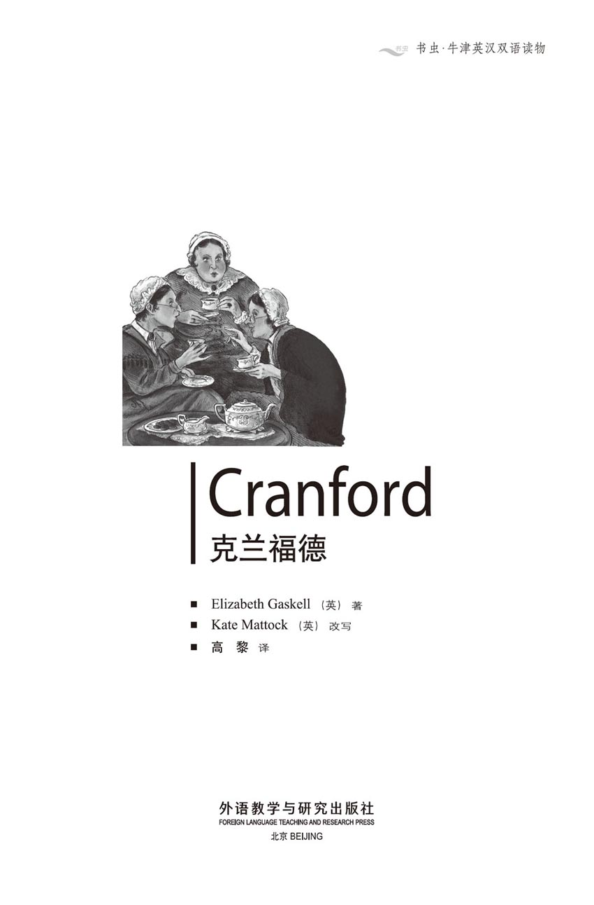
版权页
京权图字：01-2002-6594
Originally published by Oxford University Press, Great Clarendon Street, Oxford. © 2000
This edition is licensed for sale in the People's Republic of China only and not for export therefrom.
'Oxford' is a registered trademark of Oxford University Press.
只限中华人民共和国境内销售，不包括香港特别行政区、澳门特别行政区及台湾省。不得出口。
图书在版编目（CIP）数据
克兰福德 = Cranford / （英）盖斯凯尔（Gaskell, E.）著；（英）马托克（Mattock, K.）改写；高黎译．—北京：外语教学与研究出版社，2003.8（2011.7 重印）
（书虫·牛津英汉双语读物）
ISBN 978-7-5600-3744-8
Ⅰ．克… Ⅱ．①盖…②马…③高… Ⅲ．英语—对照读物，小说—英、汉 Ⅳ．H319.4：I
中国版本图书馆CIP数据核字（2003）第091351号
出版人： 蔡剑峰
责任编辑：易 璐
封面设计：刘 莎
出版发行：外语教学与研究出版社
社 址：北京市西三环北路19号（100089）
网 址：http://www.fltrp.com
版 次：2003年12月第1版
书 号：ISBN 978-7-5600-3744-8
* * *
制售盗版必究举报查实奖励
版权保护举报电话：（010）88817519
内容简介
内容简介
克兰福德没有富人，但人们却忌讳谈论贫穷。绝对不能！那样做很俗气，而脱俗在克兰福德很重要。在尊敬的贾米森夫人的晚会上只有抹了黄油的薄面包（昂贵的食物显得俗气），杰西·布朗小姐公开谈论她那当店主的舅舅的时候，德博拉·詹金斯小姐生气极了。做生意的舅舅！多可怕啊！
150年前的社会规则虽然和现在的不同，但人并没有什么两样。克兰福德的女士们和任何时代的人一样，她们会有喜怒哀乐，会骄傲、勇敢、嫉妒——也非常善良。可爱温柔的马蒂小姐遇到困难时，大家都想帮她。虽然马蒂小姐在生活中遇到很多不幸，但也有一个惊喜在等待着她……
CRANFORD
CRANFORD
In Cranford nobody is very rich, but you must not talk about being poor. Indeed not! That would be a very vulgar thing to do. And in Cranford it is important not to be vulgar. At the Honourable Mrs Jamieson's evening parties there is only thin bread-and-butter (expensive food would be vulgar), and Miss Deborah Jenkyns is extremely cross when Miss Jessie Brown talks openly about her shopkeeper uncle. An uncle in trade! What horror!
The rules of society were different 150 years ago, but people stay the same. The ladies of Cranford are just like people in any age. They can be sad, happy, proud, brave, angry, jealous—and very kind. When dear, gentle Miss Matty is in trouble, everybody wants to help her. And though there are many sadnesses in Miss Matty's life, there is also a very happy surprise waiting for her...
目录
1．Our society
1
Our society
The first thing to say is that Cranford is held by the ladies. They rent all the best houses. If a married couple comes to live in the town, the gentleman soon disappears from sight. He is either frightened away by being the only man at the Cranford evening parties or he is at his business all week in Drumble, twenty miles away by train.
Anyway, what is there for a gentleman to do in Cranford? The town already has a doctor, and the ladies manage everything else perfectly well themselves. They keep the gardens tidy and their maid-servants busy. They have opinions on every important matter without troubling themselves with unnecessary reasons or arguments. They know exactly what everyone in the town is doing. They are kind to the poor and, usually, very kind and friendly to each other.
'A man,' as one of them said to me once, 'is terribly in the way in the house!'
The Cranford ladies are not fashionable, and they prefer the old ways. When I lived there, they had exact rules for visiting, which they explained most seriously to any young people who came to stay: 'Our friends have asked how you are, my dear, after your journey. They are sure to call on you the day after tomorrow, so be ready to receive them from twelve o'clock. From twelve to three are our calling hours.'
Then, after the friends had called: 'Always return a call within three days, my dear. And never stay longer than a quarter of an hour.'
The result of this rule, of course, was that nothing interesting was ever discussed. We talked about things like the weather, and left at the right time.
One or two of the Cranford ladies were poor, I imagine, but they tried to hide it, and the others kindly helped. When Mrs Forrester gave a party and her little maid had to get the tea-tray from under the sofa on which we sat, everyone just went on talking. And when Mrs Forrester pretended she did not know what cakes were on the tray, no one looked surprised. But we knew, and she knew that we knew, and we knew that she knew that we knew, that she had made the cakes herself that morning.
In fact, the Cranfordians thought it was 'vulgar' (a favourite word) to give anything expensive to eat or drink at their evening parties. Thin bread-and-butter was all that the Honourable Mrs Jamieson gave—and she was related to the late Lord Glenmire.
Yes, spending money was always 'vulgar', and we certainly did not tell anyone that we had very little to spend. So I shall never forget the horror when an old army captain came to live in Cranford and spoke openly about being poor! In the street! The ladies were already rather cross about the arrival of a gentleman, and even more cross that he was going to work for a new railway near the town. If, as well as being a man and working for that awful railway, Captain Brown was going to talk about being poor, then nobody must speak to him.
I was surprised, therefore, when I visited the town a year after the captain arrived, to discover that he had made himself very popular. My own friends had been strongly against calling on him, but now they welcomed him into their house, even before twelve o'clock in the morning. He had been friendly and sensible, though the Cranford ladies had been cool, and at last his helpfulness had won him a place in their hearts.
Captain Brown was living, with his two daughters, in a small house on the edge of the town. He was probably over sixty at this time, though he looked younger. In fact, Miss Brown, his elder daughter, looked almost as old as he did. She was only about forty, but her face was white and tired.
Miss Jessie Brown was ten years younger and twenty times prettier. Her face was round and had dimples. Miss Jenkyns once said, when she was annoyed with Captain Brown (for a reason I'll explain later), that it was time Miss Jessie stopped having dimples and looking like a child. There was indeed something childish about the way she looked, but I liked her face. So did everybody—and I do not think she could prevent the dimples.
I first saw the Brown family together in Cranford church. The captain sang loudly and happily; and when we came out, he smiled at everyone and patiently helped Miss Brown with her umbrella.
I wondered what the Cranford ladies did with him at their card-parties. We had often been glad in the past that there were no gentlemen to worry about. Indeed, we had almost persuaded ourselves that it was 'vulgar' to be a man. So now, when Miss Deborah Jenkyns (with whom I was staying) gave a party for me and invited the Browns, I wondered how the evening would go.
It was the third week of November, so it was dark by four o'clock. The card-tables were arranged. Candles and clean packs of cards were put on each one. The fire was lit. The maid was given final orders. And there we stood in our best dresses, ready to light the candles as soon as the first person knocked at the door.
The Browns arrived when the tea-trays were on the tables. The captain took immediate care of all the ladies, passing round cups and bread-and-butter. He was clearly a favourite. But all the time he kept an eye on his elder daughter—a sick woman, I was sure. Miss Jessie seemed almost as popular as her father. She talked to those not playing cards, and later she sang while Miss Jenkyns beat time to the music.
It was good of Miss Jenkyns to do this, because she had been much annoyed by Miss Jessie a little earlier. 'My mother's brother,' Miss Jessie had said to Miss Pole, 'is a shopkeeper in Edinburgh.' An uncle in trade! Oh dear! The Honourable Mrs Jamieson was sitting at the nearest cardtable and Miss Jenkyns had coughed loudly to prevent her hearing the terrible words. But Miss Jessie had happily repeated them, telling Miss Pole that her uncle sold the best knitting-wool in Edinburgh. So, I say again, it was good of Miss Jenkyns to beat time to her song.
At a quarter to nine, when the trays came back with a little more food, there was conversation. After a while Captain Brown began to talk about books.
'Have you seen any of The Pickwick Papers?' he asked. (It was 1836, and Mr Dickens's new book was appearing month by month.)
'Yes, I have,' answered Miss Jenkyns. Miss Jenkyns was the daughter of a past rector of Cranford church and, having his library of church books and sermons, she considered that she knew about books of all kinds.
'And what do you think of them?' asked the captain enthusiastically. 'Aren't they good?'
'Not as good as Dr Johnson,' replied Miss Jenkyns. 'But perhaps your man is young. If he copies the style of the great doctor, he may succeed.'
'But it's quite a different thing, my dear madam!' cried Captain Brown. 'Let me just read you something from this month's paper.'
The Pickwick story he read was a very amusing one about a party in Bath, but Miss Jenkyns did not smile. She sent me to fetch Dr Johnson's Rasselas, and read us a slow conversation, full of long words, between Rasselas and his teacher.
'Now you understand,' she said grandly as she put the book down, 'why I prefer Dr Johnson as a writer. Beginners should copy his style, I did, when I began to write letters. Your favourite should do the same.'
'I hope he won't copy anything so self-important!' said Captain Brown.
He was sorry later for what he had said, and stood near Miss Jenkyns's armchair, trying to please her. But she did not give in. The next day she said what she thought of Miss Jessie's dimples.
couple n. two people or things that are seen together or associated, esp. a man and a woman together. 一对，一双（尤指男女）。
trouble v. let oneself be worried or concerned about sth. （使）费神；（使）费心。
terribly adv. (infml.) very. 很，非常。
in the way causing inconvenience or obstruction. 造成不便或阻碍。
vulgar adj. lacking in good taste or refinement. 粗俗的；庸俗的。
Honourable title given to the children of peers below the rank of marquis. 对侯爵以下贵族子女的尊称。
related adj. (esp. pred.) in the same family or class, etc. （尤作表语）属于同一家族或种类等的。
horror n. feeling of intense dislike; hatred. 强烈的厌恶；憎恶；痛恨。
cross adj. (infml.) rather angry. （口）生气的；恼怒的。
awful adj. extremely bad or unpleasant; terrible. 极坏的；极讨厌的；可怕的。
discover v. (esp. passive) come to know or realize (sth.). （尤用于被动语态）了解到；认识到；发觉（某事物）。
dimple n. small natural hollow in the chin or cheek (either permanent, or which appears e.g. when a person smiles). （下巴或脸颊上自然的）小窝；酒窝。
persuade v. cause sb. to do sth. by arguing or reasoning with him. 说服或劝说某人做某事。
keep an eye on sb./sth. make sure that sb./sth. is safe, etc.; look after sb./sth. 留心或注意某人或某事物。
time n. type of rhythm. 拍子。
conversation n. informal talk. 交谈；谈话；谈天。
sermon n. talk in printed form on a moral or religious subject, usu. given by a clergyman from the pulpit during a religious service. 布道文（通常指教士在讲坛上做出的）。
grandly adv. proudly, arrogantly. 骄傲地；自豪地。
self-important adj. (derog.) thinking that one is much more important than one really is; pompous. （贬）自视过高的；妄自尊大的。
give in allow oneself to be defeated or overcome (by sb./sth.). （向某人或某物）屈服；让步；投降。
我们的社会
1．我们的社会
首先要说的是，克兰福德是由女士们控制着的。她们租住最好的房子。如果一对夫妇来镇上生活，那个男人不久就会从人们的视野中消失。他要么是因为成了克兰福德晚会上唯一的男人而被吓跑，要么就是整个星期都待在20英里外的德莱姆伯尔忙自己的事，那里有火车相通。
不管怎么说，男人在克兰福德能做什么呢？镇上已经有一个医生了，其他事情女士们自己都处理得井井有条。她们让花园保持整洁，让女仆们忙进忙出。对每件重要的事情她们有自己的看法，从不费神做无谓的推理或争论。镇里每个人在做什么她们都了如指掌。她们对穷人很好，通常彼此之间也非常友善。
“男人，”其中一位曾经对我说，“在家里实在碍手碍脚！”
克兰福德的女士们并不时髦，她们更喜欢传统的生活方式。我住在那里的时候，她们有严格的串门规矩，她们对来这里的年轻人都会非常认真地解释这些规矩：“亲爱的，我们的朋友们问你是否旅途劳顿。她们一定会在后天来看你，所以从12点开始你就要做好迎接她们的准备。从12点到3点是我们的串门时间。”
朋友们拜访过后，她们又说：“一定要在三天内回访，亲爱的。但待在那里的时间千万别超过一刻钟。”
当然，有这条规矩束缚着，谈话的内容也就从来没有什么意思。我们谈谈天气之类的话题，然后准时离开。
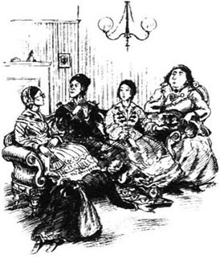
我猜想，克兰福德有一两位女士家境并不宽裕，不过她们尽力掩饰这一点，其他人也善意地帮忙。福里斯特夫人举行聚会的时候，她的小女仆不得不从我们坐着的沙发下面取出茶盘，而大家还继续谈话。福里斯特夫人假装不知道托盘上是什么蛋糕，没人显出惊讶的样子。但我们知道，她也知道我们知道，而且我们也知道她知道我们知道，蛋糕是那天早上她亲手做的。
实际上，克兰福德人觉得在晚会上请客人吃喝昂贵的东西很“俗气”（人们最爱用的一个词）。抹了黄油的薄面包片就是尊敬的贾米森夫人用来待客的全部东西——她可是已故的格伦米尔勋爵的亲戚。
是的，花钱总是很“俗气”，我们当然不会告诉别人我们没多少钱可花。所以，当一位军队老上尉到克兰福德来生活并且公开谈论贫穷的时候，我感到非常惊骇！他就在大街上公开谈论！这种感觉我至今难忘。女士们对于一位先生的到来已经够生气的了，更让她们生气的是，他还要在镇子附近新建的铁路上工作。如果布朗上尉身为男人，还为那条该死的铁路工作，还要谈论贫穷，那么谁都不该和他说话。
因此上尉到此一年后我再次来到镇上，发现他居然很得人心，实在令我惊讶。我自己的朋友们曾经强烈反对拜访他，现在却欢迎他到她们家里去，哪怕是在上午12点之前。他对人友善，通情达理，所以虽然克兰福德的女士们曾经冷淡过他，他对她们的帮助最终还是在她们心中为自己赢得了一席之地。
布朗上尉和两个女儿住在镇子边上的一幢小房子里。当时他大概已经60多岁了，不过看起来要年轻得多。事实上，他的大女儿布朗小姐看起来年纪几乎和他一样大。她只有40岁左右，面容却苍白而疲惫。
杰西·布朗小姐比她小十岁，漂亮20倍。她长着一张圆脸，还有两个酒窝。詹金斯小姐曾经说，和布朗上尉生气的时候（具体原因我会在后面解释），杰西小姐的酒窝就不见了，看起来也不像个孩子了。她的长相的确有些孩子气的地方，不过我喜欢她的样子。大家都喜欢——我觉得她没法忍住不让酒窝出现。
我最初是在克兰福德的教堂见到布朗一家的。上尉唱歌嗓音洪亮，神采奕奕；我们出来的时候，他朝每个人微笑，并耐心地替布朗小姐打伞。
我想知道克兰福德的女士们在牌局中怎么对他。以前我们总是为不必担心男人而高兴。真的，我们差点儿让自己相信作个男人是件“俗气”的事。所以，现在德博拉·詹金斯小姐（我住在她那里）要为我举行一个晚会，并且邀请了布朗一家，我想知道晚上会发生些什么。
时值11月的第三个星期，4点钟天就黑了。牌桌已经摆好，每张桌子上都放着蜡烛和一副副干净的纸牌。火也生上了。女仆已吩咐完毕。我们穿上最好的裙子站着，准备好在第一个人敲门的时候把蜡烛点燃。
茶盘摆上桌的时候，布朗一家到了。上尉马上开始为所有的女士服务，把茶杯和涂了黄油的面包递给大家。显然人们都很喜欢他。不过他一直留意着他的长女——一个病怏怏的女人，我可以肯定。杰西小姐好像几乎和她父亲一样受欢迎。她和不打牌的人聊天，后来她唱起了歌，而詹金斯小姐随着音乐打拍子。
詹金斯小姐这么做挺不容易，因为早先她还生着杰西小姐的气。“我妈妈的弟弟，”杰西小姐对波尔小姐说，“在爱丁堡开商店。”一个做生意的舅舅！哦，天啊！尊敬的贾米森夫人正好坐在最近的牌桌旁，所以詹金斯小姐大声地咳嗽，以免她听到这些可怕的话。可是杰西小姐又高兴地重复了一遍，告诉波尔小姐她舅舅卖的毛线是爱丁堡最好的。所以，我再说一遍，詹金斯小姐能随着她的歌打拍子真是不容易。
差一刻9点的时候，盛着稍多一点食物的盘子又回到了桌上，谈话也开始了。过了一会儿，布朗上尉开始谈论书籍。
“你们有没有读过《匹克威克外传》？”他问道。（当时是1836年，狄更斯先生的新书每月连载出版。）
“是的，我读过。”詹金斯小姐答道。詹金斯小姐是克兰福德教堂一位已故教区长的女儿，因为拥有他那藏着教会图书和布道文的图书室，她觉得自己了解各种类型的图书。
“你觉得它们写得怎么样？”上尉热心地问，“挺不错吧？”
“没有约翰逊博士的好，”詹金斯小姐答道，“不过可能你说的那个人年纪还轻。如果他能模仿博士大师的风格，他也许能成功。”
“可那是两回事，亲爱的小姐！”布朗上尉大声说道，“让我给你读一段这个月连载的故事。”
他读的《匹克威克外传》故事讲的是巴斯的一个晚会，非常有趣，但詹金斯小姐却没有笑。她让我去取约翰逊博士的《拉塞拉斯》，并给我们读了一段拉塞拉斯和他老师之间冗长的对话，里面有很多很长的词。
“现在你明白了，”她放下书骄傲地说，“我为什么更喜欢约翰逊博士这位作家。初学写作的人应该模仿他的文风，我刚学写信的时候就试过。你最喜欢的作家也该这么做。”
“我希望他不要模仿任何那么自以为是的东西！”布朗上尉说道。
后来他就后悔自己说的那些话了，所以他站在詹金斯小姐的扶手椅旁边，想让她高兴起来。但她并不给他台阶下。第二天她说了自己对杰西小姐的酒窝的看法。
2．The captain
2
The captain
It was impossible to live in Cranford for a month and not know everybody's daily habits. So, long before my visit ended, I knew a lot about the Browns. They were indeed poor. And the captain was extraordinarily kind. One Sunday morning after church, he met a poor old woman who was fetching her dinner from the town bakehouse. The street was wet and she was rather shaky on her legs, so the captain carried her baked meat and potatoes home for her! Cranford people did not do this kind of thing, but the captain was not at all ashamed of himself.
Miss Jenkyns could not forgive Captain Brown for his unkind opinion of Dr Johnson, so I did not see much of the family until I went on to stay with Miss Pole. I learnt then that Miss Brown was seriously ill. And when I saw how difficult she was, and how endlessly kind her father and sister were to her, I understood a little better and forgave Miss Jessie for her childish way of dressing.
The captain tried hard to make peace with Miss Jenkyns, but she remained cool. No gentleman, surely, could prefer Mr Dickens to Dr Johnson!
That was the situation when I left Cranford to return to my father in Drumble. But several of the ladies sent me news of the dear little town. Miss Pole wrote, asking for some knitting-wool. Miss Matty Jenkyns (Miss Deborah's younger sister) wrote nice, kind, disorganized letters, occasionally giving her own opinion but more often giving her elder sister's. And Miss Deborah Jenkyns herself wrote—grand, slow-moving letters, using words like 'Brunonian' for 'Brown'.
My next visit to Cranford was in the summer. No one had been born or married since I was last there, and no one had died. Everyone lived in the same house and wore the same unfashionable clothes. The greatest excitement was that the Misses Jenkyns had bought a new carpet. Oh, what busy work Miss Matty and I had in the afternoons, covering it with newspaper where the sun shone in!
Captain Brown and Miss Jenkyns were still not very friendly. Miss Jenkyns always talked at the captain and, though he did not reply, he made it quite clear that he preferred the writings of Mr Dickens to those of Dr Johnson. Indeed, he used to read Mr Dickens's books while walking through the streets, and was so deeply interested in his reading that once he nearly knocked Miss Jenkyns down.
The poor, brave captain! His clothes looked very old and worn, but he seemed as bright as ever, unless he was asked about his elder daughter's health. 'She's in great pain,' he replied, 'though we do what we can.'
Miss Matty told me that, in fact, he and his younger daughter had done everything possible to make the patient comfortable, whatever the cost. 'And Miss Jessie's a wonderful nurse. My dear, if you saw her as I have, you'd never laugh again at her childish pink ribbons.'
I felt ashamed and spoke to Miss Jessie with twice as much respect next time we met. She looked exhausted, but she pushed back the tears in her pretty eyes. 'What a good town Cranford is!' she said. 'Everyone sends my sister presents.'
Captain Brown called one day to thank Miss Jenkyns for many little kindnesses I had not known about. He had suddenly become like an old man, and his deep voice trembled when he spoke about his elder daughter. 'There is no hope,' he said. 'Thank God we have Jessie!' Then he quickly shook everyone's hand and left the room.
That afternoon, we saw little groups in the street, all listening with horror to some story. Miss Jenkyns sent out Jenny the maid, who came back in tears. 'Oh, Miss Jenkyns! Captain Brown has been killed by that cruel railway!'
'How? Where, where?' Miss Matty ran out into the street and brought back the man who was telling the story. 'Oh, say it's not true!' Miss Matty cried.
The man stood there with his wet boots on the new carpet and no one noticed. 'It's true, Miss,' he said. 'I saw it myself. The captain was reading some new book while he waited for the down-train. Then he looked up suddenly and saw a little girl on the railway line, just as the train was coming into the station. He ran forwards and caught her, but then he fell and the train went straight over him. The child's safe, though. The poor captain would be glad of that. Miss, wouldn't he?'
Miss Jenkyns's face was very white. 'Matilda, bring me my bonnet,' she commanded Miss Matty. 'I must go to those girls... God forgive me if I ever spoke sharply to the captain!'
When she came back, she did not want to talk much. Mr Hoggins, the Cranford doctor, had said that Miss Brown would not live for many more days. Miss Jessie did not want her sister to hear the terrible news of her father's death, so Miss Brown was told that her father had been called away on railway business.
Next day, the newspaper had the full story of the accident. 'The brave gentleman,' it said, 'was reading this month's Pickwick Papers.'
'Poor, dear, silly man!' Miss Jenkyns shook her head, and busily sewed some black ribbon on her bonnet for the funeral.
She went with Miss Jessie to the funeral, while Miss Pole, Miss Matty and I sat with Miss Brown.
Next day when we returned, we could see that Miss Brown was dying.
'Oh, Jessie!' she whispered. 'How selfish I've been! God forgive me!'
'Sssh, love, sssh!' said Miss Jessie in tears.
'And my dear, dear father! He can never know now how I loved him.'
'He does know, dearest. He... he has gone before you to his resting-place. He knows now how you loved him.' The tears ran like rain down Miss Jessie's face. A few moments later her sister lay calm and quiet.
After this second funeral, Miss Jenkyns made Miss Jessie stay with us. Miss Jessie had only about ￡20 a year to live on, and one day she and I began to discuss how she could earn some money.
'I can sew,' said Jessie, 'and I like nursing...'
Suddenly Miss Jenkyns entered the room in unusual excitement. 'My dear Miss Jessie! Such a surprise! There is a gentleman downstairs whom you once knew—'
Miss Jessie went white, then red.
'—a gentleman, my dear, who wants to know if you will see him.'
'Is it...? It isn't...?' Miss Jessie could not finish.
'This is his visiting-card,' said Miss Jenkyns. She gave the card to Miss Jessie and made a strange face at me over her head. 'May he come up?'
'Oh, oh yes!' said Miss Jessie. She picked up some of Miss Matty's knitting and began to be very busy.
Miss Jenkyns rang the bell. 'Bring Captain Gordon upstairs,' she told the maid.
A tall, fine, sincere-looking man of about forty walked in. He shook hands with Miss Jessie, who looked down at the floor.
Miss Jenkyns asked me to come downstairs and help her prepare some fruit. Although Miss Jessie tried to make me stay, I could not refuse to help Miss Jenkyns. Instead of preparing fruit, however, Miss Jenkyns told me what Captain Gordon had told her. He had been in the army with Captain Brown and had fallen in love with Jessie when she was only eighteen. When he had inherited an estate in Scotland, he had asked her to marry him—and she had refused in order to nurse her sister. Gordon had then gone angrily abroad. He was in Rome when he saw the report of Captain Brown's death.
Just then Miss Matty, who had been out all the morning, happened to come home. 'Deborah!' she cried. 'There's a gentleman upstairs with his arm round Miss Jessie's waist!' Miss Matty's eyes were large with horror.
Miss Jenkyns's reply surprised her sister greatly.
'The best place in the world for his arm to be in. Go away, Matilda, and mind your own business.'
* * *
The last time I ever saw Miss Jenkyns was years after this. She and Miss Matty and Miss Pole had all visited Miss Jessie (now Mrs Gordon) in Scotland and returned with wonderful stories of her home, her husband and her pretty dimples. Now, at the time I am speaking of, Miss Jenkyns had grown old. Miss Jessie's daughter, little Flora Gordon, had come down to Cranford on a visit. When I came in, Miss Jenkyns was lying on the sofa and Flora was reading aloud to her.
'Ah, my dear!' Miss Jenkyns said to me. 'I cannot see as well as I used to. Did you ever read Rasselas? It's a wonderful book—wonderful! And so good for Flora. Much better than that strange book by Mr Dickens that killed poor Captain Brown...'
shaky adj. shaking or trembling through weakness, illness. etc. （因病、体弱等）摇晃的，发抖的，颤抖的。
make peace (with sb.) (of two people, countries, etc.) agree to end a war or a quarrel. （指两人、两国等）和解；媾和。
disorganized adj. badly organized or planned. 组织不善的；计划不周的。
occasionally adv. now and then; at times. 偶然地；不时地；有时。
bright adj. cheerful and lively. 愉快的；活泼的。
exhausted adj. very tired. 极其疲倦的。
tremble v. shake involuntarily (from fear, cold, weakness, etc.); quiver. （因恐惧、害怕、虚弱等）颤抖；战栗。
straight adv. directly. 直接地。
command v. (of sb. in authority) tell (sb.) that he must do sth.; order. （指有权者）叫（某人）必须做某事；命令。
funeral n. (usu. religious) ceremony of burying or burning dead people. （通常为宗教的）葬礼；出殡。
live on depend on sth. for financial support. 靠某种经济来源生活。
ring v. make a bell sound to call, warn, etc. sb. 鸣铃召唤；警告某人。
inherit v. receive (property, a title, etc.) as a result of the death of the previous owner. 继承（财产、头衔等）。
estate n. area of land, esp. in the country, with one owner. 地产；（尤指）庄园。
mind one's own business (esp. imperative) not interfere in other people's affairs. （尤用于祈使句）注意你自己的事；少管闲事。
speak of literary show clearly that sth. happened or that it exists. 表明某事物；意味着某事物。
上尉
2．上尉
在克兰福德住上一个月，不可能不知道每个人的日常习惯。所以，早在我的访问结束之前，我对布朗一家就有了很多了解。他们确实不富裕，上尉又是个特别好的人。一个星期日的早晨，做过礼拜之后，他碰到一个可怜的老太太在镇里的面包房取午饭。街道上湿漉漉的，她两腿都在打颤，所以上尉帮她把烤肉和土豆弄回了家！克兰福德人不会做这种事，但上尉一点儿也没感到有什么不妥。
詹金斯小姐不肯原谅布朗上尉对约翰逊博士口出不逊，所以我在搬到波尔小姐那里住之前，很少见到这家人。后来我听说布朗小姐病得很重。当我看到她痛苦的样子，看到她父亲和妹妹尽心尽力地照料她时，我对他们的了解更多了些，也不再介意杰西小姐穿衣服孩子气了。
上尉努力想和詹金斯小姐讲和，但詹金斯小姐不加理睬。当然了，没有哪位绅士会喜欢狄更斯先生，而不是约翰逊博士！
我离开克兰福德，回到德莱姆伯尔我父亲身边的时候，情况就是这样。不过有几位女士给我送来了这个可爱小镇的消息。波尔小姐写信要一些毛线。马蒂·詹金斯小姐（德博拉小姐的妹妹）信写得不错，很友好，但没有章法，有时候她会谈谈自己的看法，不过更多的时候她写的都是她姐姐的看法。德博拉·詹金斯小姐写的信夸张而乏味，用“布鲁诺宁”这样的词来代替“布朗”。
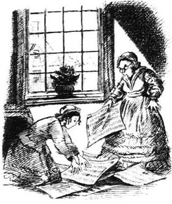
我再次来到克兰福德时已是夏天了。从我上次到那里到现在，没有人出生、结婚或过世。每个人都住在同样的房子里，穿着同样过时的服装。最振奋人心的事情就是詹金斯小姐买了一条新地毯。哦，我和马蒂小姐下午的时候得把报纸铺在地毯上阳光照得着的地方，可真够我们忙的！
布朗上尉和詹金斯小姐之间仍然不太友好。詹金斯小姐说话总是和上尉针锋相对，虽然上尉并不予以回应，他还是表明他更喜欢狄更斯先生而不是约翰逊博士的作品。的确，他曾在街上边走边读狄更斯先生的作品，读得很入神，以至于有一次差点儿撞倒詹金斯小姐。
可怜勇敢的上尉！他的衣服显得很破旧，不过他人还是像从前那样精神，除非被问到他大女儿的健康状况。“她痛得厉害，”他答道，“虽然我们尽力了。”
马蒂小姐告诉我，实际上，他和小女儿什么可能的方法都试过了，想让病人舒服点儿，而且不惜任何代价。“杰西小姐是个出色的护士。亲爱的，如果你像我一样亲眼看到，你就再也不会笑话她那些孩子气的粉红色丝带了。”
我感到惭愧，所以再次见到杰西小姐的时候，我和她说话时口气双倍的尊敬。她显得很疲惫，不过还是忍住没让她那双美丽的眼睛流泪。“克兰福德真是个好地方！”她说，“大家都给我姐姐送礼物。”
一天，布朗上尉来拜访，感谢詹金斯小姐帮了很多小忙，这些我都不知道。他突然变得像个老人，说起大女儿的时候，他低沉的嗓音都在颤抖。“没希望了，”他说，“感谢上帝我们还有杰西！”然后他匆匆地和大家握了握手，就离开了房间。
那天下午，我们看见街上的人一小群一小群地聚在一起，都面带恐惧地听着什么事情。詹金斯小姐把女仆珍妮打发了出去，结果她哭着回来了。“哦，詹金斯小姐！布朗上尉被那条无情的铁路害死了！”
“怎么回事？在哪儿，在哪儿？”马蒂小姐跑到街上把正在说这件事的那个男人带了回来，“哦，说那不是真的！”马蒂小姐哭道。
那人穿着湿靴子站在新地毯上，却没人注意到。“是真的，小姐，”他说，“我亲眼看见的。上尉边看新书边等火车。后来他突然抬头看见铁道上有一个小女孩儿，而火车马上就要进站了。他跑过去抓住她，可后来自己却摔倒了，火车径直地从他身上碾了过去。不过孩子倒平安无事，可怜的上尉会为这个感到欣慰的。小姐，对吧？”
詹金斯小姐面色惨白。“马蒂尔达，把我的圆帽拿来，”她命令马蒂小姐，“我必须去看看那两个姑娘……要是我以前对上尉说过什么刻薄的话，上帝宽恕我！”
她回来的时候，并不怎么想说话。克兰福德的医生霍金斯先生说过布朗小姐活不了多少天了。杰西小姐不想让她姐姐听到父亲去世的噩耗，所以布朗小姐被告知她父亲因为铁路上的事被叫走了。
第二天，报上刊登了事故的全过程。“这位勇敢的绅士，”报上写道，“当时正在读这个月的《匹克威克外传》。”
“可怜、可爱的傻瓜！”詹金斯小姐摇了摇头，然后就忙着在圆帽上缝上黑带子，以备葬礼上用。
她陪杰西小姐一起去参加葬礼，而我和波尔小姐、马蒂小姐则陪着布朗小姐。
第二天我们回来的时候，发现布朗小姐快要死了。
“哦，杰西！”她低声说道，“我是多么自私啊！上帝宽恕我！”
“嘘，亲爱的，嘘！”杰西小姐含着眼泪说。
“我亲爱的，亲爱的爸爸！他永远无法知道我有多爱他了。”
“他知道，最亲爱的。他……他已经先于你到长眠之地去了。他知道你有多爱他。”杰西小姐泪如雨下。过了一会儿，她姐姐就安息了。
第二个葬礼之后，詹金斯小姐让杰西小姐和我们住在了一起。杰西小姐每年只有大约20英镑的收入，她就靠这点儿钱过活，所以有一天她和我开始讨论她该怎么挣点儿钱。
“我可以给人缝补东西，”杰西说，“而且我也喜欢看护……”
突然詹金斯小姐走进房间，神情异常激动，“我亲爱的杰西小姐！真是个惊喜！楼下有一位你认识的绅士——”
杰西小姐脸色一白，接着又红了。
“——一位绅士，亲爱的，他想知道你愿不愿意见他。”
“是……？不是……？”杰西小姐说不下去了。
“这是他的名片。”詹金斯小姐说。她把名片递给杰西小姐，从她头顶上朝我做了个鬼脸，“他可以上来吗？”
“哦，哦可以！”杰西小姐说。她把马蒂小姐的编织活儿拿起来开始忙着编织。
詹金斯小姐按了铃。“请带戈登上尉上楼。”她对女仆说。
一位40岁左右，举止文雅，相貌真诚的高个子男人走了进来。他和杰西小姐握手的时候，杰西小姐低头看着地板。
詹金斯小姐让我下楼帮她准备一些水果。虽然杰西小姐竭力让我留下来，我却不能拒绝帮助詹金斯小姐。不过，詹金斯小姐并没有准备水果，而是把戈登先生跟她说的话告诉了我。他和布朗上尉曾一起在军中服役，并在杰西小姐年仅18岁那年爱上了她。当他继承了一处位于苏格兰的庄园时，他曾经向她求婚——可是她为了照顾姐姐，拒绝了他。于是戈登一气之下远走异国。他是在罗马得知布朗上尉的死讯的。
正在那时，已经出去一个早上的马蒂小姐碰巧回家了。“德博拉！”她叫道，“楼上有一位先生用胳膊搂着杰西小姐的腰！”马蒂小姐吓得瞪大了眼睛。
詹金斯小姐的回答令她妹妹大为吃惊。
“那是这世界上最适合他放胳膊的地方。马蒂尔达，忙你自己的事情去吧。”
* * *
我上次见詹金斯小姐已经是这之后的好多年了。她和马蒂小姐以及波尔小姐都到苏格兰去看望过杰西小姐（现在的戈登夫人），回来使劲地夸奖她家、她丈夫和她那漂亮的酒窝。现在，我说这些事情的时候，詹金斯小姐已经老了。杰西小姐的女儿，小弗洛拉·戈登也来到了克兰福德。我进来的时候，詹金斯小姐正躺在沙发上，而弗洛拉则在大声地给她读书。
“啊，亲爱的！”詹金斯小姐对我说，“我现在视力不如以前好了。你读过《拉塞拉斯》吗？那是一本好书——真的好！对弗洛拉非常有益，比让可怜的布朗上尉丧命的狄更斯先生的怪书要好多了……”
3．A love-affair of long ago
3
A love-affair of long ago
After Miss Jenkyns's death, I did not expect to go to Cranford again. It was pleasant, therefore, to receive a letter from Miss Pole, inviting me to stay, and then a few days later a letter from Miss Matty, also inviting me. I promised to go to Miss Matty as soon as I had ended my visit to Miss Pole; and I went to see her the day after my arrival in Cranford. Miss Matty began to cry as soon as she saw me.
I took her hand, feeling very sorry for her, all alone in the world without her sister. 'Dear Miss Matty!' said I.
'My dear, I'd rather you didn't call me Matty. She didn't like it. Please, my love, will you call me Matilda?'
I promised—and I did try. We all tried, but with so little success that in the end we called her 'Miss Matty' again.
My visit to Miss Pole was very quiet. The Honourable Mrs Jamieson was too fat and lazy to give many parties and, without Miss Jenkyns to lead them, the other ladies did not quite know what to do. So 1 sewed my father's shirts, while Miss Pole did her knitting and told me stories about Cranford. One of her stories was about a love-affair she had suspected many years before.
After a week, I moved to Miss Matilda's house. How anxious she was about everything! 'Is your room all right, dear?' she said worriedly as I unpacked. 'The fire's not very bright. My sister used to arrange things to well. She could train a servant in a week, but Fanny's been with me for four months...'
Maid-servants were always a problem to the ladies of Cranford, and specially to poor Miss Matilda. There were not many gentlemen in the town, as I have said, but the number of handsome young working men was alarming. Sometimes they had to call at the house. What would happen if the maid fell in love with one of them? Pretty Fanny was not allowed to have any 'followers', but her mistress suspected that she had very many—and I myself once saw something strangely like a young man hiding behind the kitchen clock.
However, during my visit Fanny had to leave; and I agreed to stay and help Miss Matilda with the new maid. Martha was a rough, honest-looking girl from a farm. I liked her, and I promised to teach her the rules of the house. These rules were, of course, Miss Jenkyns's rules. Miss Matilda had whispered against many of them during her sister's life, but now they must stay. About that, she was certain. About everything else, she was anxious and undecided.
And now I come to the love-affair. It seems that Miss Pole had a cousin who, long ago, had asked Miss Matilda to marry him. His name was Thomas Holbrook and he lived a few miles from Cranford on his own estate, called Woodley. He was a real country-man, very open and sincere, Miss Pole told me. 'He reads aloud,' she added, 'more beautifully than anyone I have ever heard, except Mr Jenkyns, the late rector.'
'Why didn't Miss Matilda marry him?' I asked.
'Perhaps the rector and Miss Jenkyns didn't think cousin Thomas was enough of a gentleman for her. You know the Jenkynses are related in some way to Sir Peter Arley. Miss Jenkyns was very proud of that.'
'Poor Miss Matty! Has she ever seen Mr Holbrook since?'
'I don't think she has. He stopped coming into Cranford after she refused him.'
'And how old is he now?'
'About seventy, my dear,' said Miss Pole.
Soon after this, strangely enough, I saw Mr Holbrook. Miss Matilda and I were looking at some coloured silks that had arrived at Mr Johnson's shop in High Street, when a tall, thin old man in country clothes hurried in. He waited impatiently, then told the shop-boy what he wanted. Miss Matilda heard his voice, and suddenly sat down. At once, I guessed who it was.
'Miss Jenkyns wants the black silk,' another shop-boy called across the shop.
Mr Holbrook heard the name. 'Matty—Miss Matilda! I didn't recognize you! How are you?' He shook her hand warmly. 'I didn't recognize you!' he repeated.
We left the shop without buying anything and Mr Holbrook walked home with us. He was clearly delighted to meet his old love again. He even spoke of Miss Jenkyns as 'Your poor sister! Well, well! We all have our faults.' And he said as he left us that he hoped to see Miss Matty again soon.
She went straight to her room. When she came down at tea-time, I saw that she had been crying.
* * *
A few days later, a note came from Mr Holbrook. It was now June. Would Miss Matty and I like to come out to Woodley for a day? he asked. He had also invited his cousin Miss Pole, so the three of us could ride in the same carriage.
At first, Miss Matty refused to accept. Then, when we finally persuaded her, she went back to the shop and chose a new bonnet for the visit.
It was clear that she had never been to Woodley before. She trembled as we drove there, and I could see that she was thinking about the past. Towards the end of the journey, she sat very straight and looked sadly out of the carriage windows.
The house itself stood among fields, and there was an old garden full of roses and little fruit-trees. 'It's very pretty,' whispered Miss Matty as Mr Holbrook appeared at the door, smiling warmly.
The day passed very happily. We sat and talked in a nice, untidy room filled with books. I asked to look at the garden, and this pleased the old gentleman. His housekeeper gave us dinner in a kind of kitchen, and later I walked with him across his fields. Then, when we came back to the house, he offered to read us some new poems by Mr Tennyson.
'Yes, please do, cousin Thomas!' said Miss Pole.
I thought this was because she wanted me to hear his beautiful reading. Afterwards, though, she said it was because she had wanted to go on with her knitting.
Whatever Mr Holbrook did was agreeable to Miss Matty. She fell asleep soon after he began a long poem called Locksley Hall, but she woke up when his voice stopped. 'How pretty!' she said quickly.
'Pretty, madam? It's beautiful!'
The poem was about lost love, but Miss Matty had not heard it. 'Oh, yes, I meant beautiful!' she apologized. 'It's so like that beautiful poem by Dr Johnson that my sister used to read. I forget the name of it.'
'Which poem do you mean, madam? What was it about?'
'I don't remember what it was about. But it was by Dr Johnson and it was very beautiful...'
As we got into the carriage to return to Cranford, Mr Holbrook promised to call on us soon. This seemed to please Miss Matty, although as soon as we had left Woodley, she began to worry about Martha. Had the girl had a 'follower' while we were absent?
However, there was no sign of a 'follower' as Martha came to help us out of the carriage. She always took good care of Miss Matty, and tonight she said:
'Eh! Dear madam, you shouldn't go out in the evening in such a thin shawl! You'll catch cold, and at your age, madam, you should be careful.'
'My age!' said Miss Matty, speaking almost crossly. 'My age! Why, Martha, how old do you think I am?'
'Well, madam, I'd say you were getting close to sixty—but I didn't mean any harm.'
'Martha, I'm not yet fifty-two!' said Miss Matty. Today's visit had reminded her of the past, and I think she did not want to remember how long ago it was.
Miss Matty said nothing to me, then or ever, about Mr Holbrook but, by careful watching, I saw that she still loved him. She now wore her best cap every day, and sat near the window to see down into the street.
He came. He asked politely about our journey home from Woodley, then suddenly he got up. 'Well, madam,' he said to Miss Matilda, 'can I bring you anything from Paris? I'm going there in a week or two.'
'To Paris?!'
'Yes. I've always wished to see it... Oh dear, I almost forgot! Here are the poems you liked at my house.' He pulled a small packet from his coat-pocket and gave it to her. 'Goodbye, Matty,' he said. 'Take care of yourself.'
He had gone. But he had given her a book and he had called her Matty, just as he used to thirty years ago.
* * *
Soon after this I left Cranford, ordering Martha to take good care of her mistress and to write to me if anything was wrong.
In November, she sent me a note to say that Miss Matilda was 'very low and not eating her food', so I went back. Miss Matty certainly looked white and miserable. I called on Miss Pole next morning and learnt that Thomas Holbrook was seriously ill. The journey to Paris had been too much for him. Ah! So that was why Miss Matty was miserable.
'I must come back with you, my dear,' said Miss Pole, 'because I promised to give Miss Matty the latest report on cousin Thomas. I'm sorry to say his housekeeper has informed me that he'll not live much longer.'
I took Miss Pole into Miss Matty's little drawing-room and left the two ladies alone.
Miss Matty did not come down to dinner, but that evening she talked to me about her girlhood. Clearly, she had been thinking about her sister, who had not wanted her to marry Thomas Holbrook. Perhaps they had not been kind thoughts, and now Miss Matty felt sorry, because she wanted to tell me how good and how clever Deborah had been. She and her mother had taught cooking and sewing to poor girls, and she had once danced with a lord, and she used to go to Arley Hall where they kept thirty servants... Deborah had also nursed her through a long illness. That illness, I decided, had followed Miss Matty's refusal of Mr Holbrook.
The next day, Miss Pole came to say that Mr Holbrook was dead. Miss Matty trembled and could not speak. She remained silent all that evening. Then she called the maid.
'Martha,' she said at last, 'you are young...'
Martha curtsied. 'Yes, madam. Twenty-two.'
'I did say that you must not have any followers. But perhaps, Martha, you will one day meet a young man whom you like and who likes you. If you do, and if I decide that he is respectable, he may come to see you once a week.'
Miss Matty was surprised, very surprised, by Martha's ready answer. 'Please, madam, there's Jem Hearn, madam. He earns three-and-sixpence a day, and he's six feet tall, and he'll be glad to come tomorrow night!'
love affair a romantic relationship between two people who are not married to each other. 恋情。
would rather... (than) prefer to. 宁愿，宁可；较喜欢。
train v. bring (a person or an animal) to a desired standard of efficiency, behaviour, etc. by instruction and practice. 培养；训练（人或动物）。
alarming adj. causing fear; disturbing. 使人害怕的；吓人的；扰乱人心的。
come to reach; arrive at. 达到；达成。
late adj. (attrib.) no longer alive. （作定语）已故的。
fault n. imperfection or flaw. 缺点；缺陷；毛病。
offer v. show or express the willingness or intention to do or give sth., etc. 表示愿意或有意做某事；给……某事物。
agreeable adj. pleasing, giving pleasure. 令人喜悦的；令人愉快的；宜人的。
apologize v. make an apology; say one is sorry. 道歉；赔不是。
shawl n. large (usu. square or oblong) piece of material worn round the shoulders or head of a woman. （女用）披肩，围巾。
remind sb. of sth. cause sb. to remember or be newly aware of sb./sth. 使某人回想起或意识到某人或某事物。
miserable adj. very unhappy or uncomfortable; wretched. 悲惨的；难受的；可怜的。
inform v. give sb. knowledge (of sth.); tell sb. 通知或报告某人（某事）；告诉某人。
girlhood n. state or time of being a girl. 少女时期。
curtsy v. (often a woman) bend one's knees with one foot behind the other to show respect to a more important person. 行屈膝礼。
respectable adj. of acceptable social position; decent and proper in appearance or behaviour. 体面的；有身份的；正派的；值得尊敬的。
很久以前的一段恋情
3．很久以前的一段恋情
詹金斯小姐过世后，我没有料到会再去克兰福德。因此，我很高兴收到波尔小姐的信，邀请我去小住一段时间，几天之后又收到一封马蒂小姐的信，也向我发出了邀请。我答应看过波尔小姐后就去马蒂小姐那里；所以抵达克兰福德的第二天，我就去见她了。马蒂小姐一见到我就哭了起来。
我拉着她的手，真为她感到难过，失去了姐姐，她在这世上无依无靠。“亲爱的马蒂小姐！”我说。
“亲爱的，还是别叫我马蒂了，她不喜欢。求你了，亲爱的，叫我马蒂尔达好吗？”
我答应了——而且还试着那么称呼她。我们都试过，但没什么用，最后我们又都叫她“马蒂小姐”了。
我对波尔小姐的拜访平静无事。尊敬的贾米森夫人太胖了，也懒得举行聚会，而且没有詹金斯小姐挑头，其他女士也不知道该做什么。所以我就缝父亲的衬衣，波尔小姐则一边织毛线一边给我讲克兰福德的事情。其中一件事是很多年前她就觉察到的一段恋情。
一周之后，我搬到了马蒂尔达小姐家。她对一切都是那么焦虑不安！“你的房间还行吧，亲爱的？”我打开行李的时候她担心地问道，“火不太旺。我姐姐以前总是把一切都安排得井井有条。她可以在一周内就调教出一个仆人，可是范妮和我在一起已经有四个月了……”
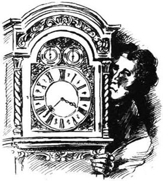
女仆们总是克兰福德女士们的一块心病，对于可怜的马蒂尔达小姐来说尤其如此。我已经说过，镇上没有多少男士，可是相貌英俊的青年工人的数量却多得惊人。有时候他们要到家中来访。要是女仆爱上了他们中的一个，那该怎么办？漂亮的范妮不许有任何“追求者”，不过她的女主人怀疑她有很多——我本人有一次奇怪地发现厨房的大钟后面藏着什么东西，好像是个年轻人。
然而，我造访的时候，范妮有事必须离开，所以我同意留下来帮马蒂尔达小姐训练新来的女仆。马莎是农场来的女孩儿，举止粗鲁，长相忠厚。我喜欢她，并且答应教她屋里的规矩。这些规矩，当然，是詹金斯小姐的规矩。马蒂尔达小姐在她姐姐活着的时候曾对其中的许多规矩颇有怨言，而现在这些规矩却必须保留。对此，她的态度明确。而对其他的事情，她却忧心忡忡，毫无主见。
现在我要讲讲那段恋情了。似乎波尔小姐有个表兄在很久以前曾经向马蒂尔达小姐求过婚。他名叫托马斯·霍尔布鲁克，住在距克兰福德几英里远的自家庄园里，那庄园叫作伍德利。他是一个真正的乡下人，非常开朗真诚，波尔小姐这么告诉我的。“他爱大声朗诵，”她又加上一句，“除了已故的教区长詹金斯先生，他比我听到过的任何人朗诵得都好。”
“马蒂尔达小姐为什么没嫁给他？”我问道。
“也许教区长和詹金斯小姐觉得托马斯表兄还不够绅士，配不上她。你知道詹金斯家和彼得·阿莱爵士有些亲戚关系，詹金斯小姐很为此感到自豪。”
“可怜的马蒂小姐！那以后她见过霍尔布鲁克先生吗？”
“我想没有吧。她拒绝了他之后，他就不再到克兰福德来了。”
“现在他多大年纪了？”
“大约70岁，亲爱的。”波尔小姐说。
奇怪的是，不久之后我就见到了霍尔布鲁克先生。马蒂尔达小姐和我在海伊大街约翰逊先生的商店里看一些新到的彩色丝绸，就在那时，一个穿着乡下衣服，又高又瘦的老头儿急匆匆地走了进来。他等得不耐烦，就告诉店里的伙计他要的东西。马蒂尔达小姐听到他的声音，突然坐了下来。我立刻就猜出他是谁了。
“詹金斯小姐要黑色的丝绸。”另一个伙计朝店里喊道。
霍尔布鲁克先生听到了这个名字。“马蒂——马蒂尔达小姐！我都没认出你来！你好吗？”他热情地跟她握手，“我都没认出你来！”他重复道。
我们什么也没买就离开了商店，霍尔布鲁克先生陪着我们走回家。又见到了他的旧情人，他显然非常高兴。提到詹金斯小姐，他甚至说“你可怜的姐姐！唉，唉！我们都有过错。”后来他离开我们的时候说他希望不久以后能再见到马蒂小姐。
她径直回到自己的房间。吃茶点的时间她走下楼时，我发现她哭过。
* * *
几天后，霍尔布鲁克先生写了张便条来。现在已经是六月了。马蒂小姐和我愿不愿意出来到伍德利玩一天？他问道。他还邀请了他的表妹波尔小姐，这样我们三个可以同乘一辆马车去。
起先，马蒂小姐不愿接受这个邀请。后来，当我们最终说服她的时候，她又到商店里为这次造访买了顶新圆帽。
显然她以前从未到过伍德利。我们驱车前往那里的路上，她有些发抖，我看得出她在回忆以前的事情。旅程快结束的时候，她坐得笔直，忧郁地望着马车窗外。
房子就建在田里，还有一个长满玫瑰花和小果树的老花园。“真漂亮。”马蒂小姐低声说道，此时霍尔布鲁克先生出现在门口，热情地微笑着。
这一天过得很愉快。我们坐在一个漂亮的房间里说话，房间里堆满了书，有些乱。我提出要看一看花园，这让老先生很高兴。他的管家在一个算是厨房的地方招待我们吃了午饭，随后我和他一起在他的田地里散步。后来，回到房子里的时候，他提出给我们朗诵几首丁尼生先生的新诗。
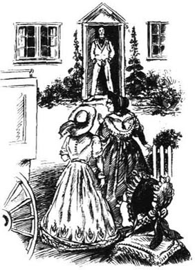
“好啊，请吧，托马斯表哥！”波尔小姐说。
我想这是因为她想让我听听他那精彩的朗诵，虽然后来她说那是因为她想继续织毛线。
对于马蒂小姐来说，霍尔布鲁克先生所做的一切都令人称心如意。他开始读一首叫作《洛克斯利大厅》的长诗，不久她就睡着了，不过他的声音一停，她又醒来了。“多好啊！”她立即说。
“好吗，小姐？那是美！”
这首诗描写的是失落的爱情，但是马蒂小姐并没有听到这些。“哦，是的。我的意思是美！”她抱歉地说道，“这和约翰逊博士写的那首美妙的诗很像，我姐姐以前经常读的。我忘记叫什么名字了。”
“你指的是哪首诗，小姐？写的是什么？”
“我不记得写的是什么。不过那是约翰逊博士写的，写得很美……”
我们坐上马车返回克兰福德的时候，霍尔布鲁克先生答应不久就来拜访我们。这似乎令马蒂小姐很高兴，虽然我们一离开伍德利，她就开始为马莎担心了。我们不在的时候，这个女孩儿有没有带个“追求者”来？
然而，马莎来帮我们下马车的时候，看不到任何有“追求者”的迹象。她总是把马蒂小姐照顾得好好的，今晚她说：
“啊！亲爱的小姐，你晚上不应该披着这么薄的披肩出去！你会着凉的，你这个年纪，小姐，你应该注意。”
“我这个年纪！”马蒂小姐几乎有些生气地说，“我这个年纪！怎么，马莎，你觉得我有多老？”
“嗯，小姐。我说你快60了——不过我并没有什么恶意。”
“马莎，我还不到52岁！”马蒂小姐说道。今天的访问让她想起了过去，我想她不愿记起那是多久以前的事。
关于霍尔布鲁克先生，无论是当时还是那以后，马蒂小姐什么也没对我说，不过通过仔细观察，我发现她仍然爱着他。现在她每天都戴着最好的帽子，坐在窗边，这样可以看见下面的街道。
他来了。他礼貌地问我们从伍德利回家路上的情况，然后突然站了起来。“嗯，小姐，”他对马蒂尔达小姐说，“我能不能给你带点儿巴黎的东西？我一两个星期以后就要去那里。”
“去巴黎？！”
“是啊。我一直想去那里看看……哦，亲爱的，我差点儿忘了！这是你在我家喜欢上的那几首诗。”他从外衣口袋里掏出一个小包递给她，“再见，马蒂，”他说，“你要保重。”
他走了。但是他给了她一本书，而且他还叫她马蒂，就像他30年前做的那样。
* * *
这之后不久我就离开了克兰福德，命令马莎好好照料她的女主人，如果有什么事就给我写信。
11月，她给我写了张便条，说马蒂尔达小姐“情绪很低落，吃不下饭”，所以我就回去了。马蒂小姐看起来的确面色苍白，神情惨淡。第二天早上我拜访了波尔小姐，才知道托马斯·霍尔布鲁克病得很重。去巴黎的那次旅行让他吃不消。啊！这就是马蒂小姐痛苦的原因。
“我必须和你一起回去，亲爱的，”波尔小姐说，“因为我答应向马蒂小姐报告托马斯表哥的最新情况。很遗憾，他的管家已经通知我他活不了多久了。”
我把波尔小姐带进马蒂小姐的小休息室，然后就让这两位女士单独待在一起。
马蒂小姐没下楼吃晚饭，不过那天晚上她和我说起了自己的少女时代。显然，她一直在想她姐姐，是她姐姐不让她嫁给托马斯·霍尔布鲁克的。也许这些想法不厚道，现在马蒂小姐觉得后悔了，因为她想告诉我德博拉有多好、多聪明。她和她母亲都给穷人家的女孩子教过烹饪和缝纫，而且她还和一位勋爵跳过舞，她以前常常去阿莱厅，那里有30个仆人……她有一次生病的时候德博拉还照顾了她很长时间。那场病，我想，是在马蒂小姐拒绝了霍尔布鲁克先生之后得上的。
第二天，波尔小姐来告诉我们霍尔布鲁克先生的死讯。马蒂小姐浑身颤抖，说不出话来。整个晚上她都沉默不语。后来她把女仆叫来。
“马莎，”她最后说，“你还年轻……”
马莎行了个屈膝礼，“是，小姐。22岁。”
“我确实说过你不能有追求者。不过也许，马莎，有一天你会遇到一个中意的年轻人，而他也喜欢你。如果是那样，如果我认为他值得尊敬，他可以一周来这里见你一次。”
马蒂小姐对马莎的迅速回答感到惊讶，非常惊讶。“那太好了，小姐，有一个杰姆·赫恩，小姐。他一天挣三先令六便士，有六英尺高，他会很乐意明天晚上来！”
4．Poor Peter
4
Poor Peter
I have often noticed that everyone has some little meanness. Miss Matty Jenkyns was mean about candles. In the winter afternoons, she used to knit for hours just by firelight; and though candles were brought in with our tea, we never burnt more than one of them.
One evening, I remember, this meanness quite annoyed me. Miss Matty had fallen asleep and it was too dark for me to sew even in front of the fire. When Martha brought in the lighted candle and tea, Miss Matty woke up with a sad little jump. She had been dreaming about her early life, I think, because all through tea she talked about her childhood. Then, afterwards, she went to her room to fetch some old family letters. I wanted more light by which to read them, but Miss Matty still refused to light a second candle.
The earliest letters were two yellow packets, tied together. 'Letters between my dear parents before their marriage in July 1774,' said Miss Jenkyns's writing. The rector of Cranford was about twenty-seven at that time, and Miss Matty's mother was not yet eighteen. The only writing of the rector's I had seen before was a grand sermon in the style of Dr Johnson. So it was strange to read these fresh young letters from him, full of love for his Molly. The girl's letters were rather different—all about wedding clothes, and a white silk dress she desperately wanted.
'We must burn them, 1 think,' said Miss Matty doubtfully. 'No one will care for them when I've gone.' One by one, she dropped the letters into the fire. The room was light enough now.
The other letters were written between about 1775 and 1805. There were sweet letters between the mother and grandmother when Deborah was born. There were later letters from the rector, full of Latin words. There were badly-spelt replies from his wife about 'bewtiful little Matty'. And there was one letter from the grandfather about a son. How strange, I thought, that I had never heard of this son before.
Then we came to Miss Jenkyns's letters. It took us two nights to read them all. The longest ones were written during a visit to Newcastle-upon-Tyne early in 1805. Some people were expecting Napoleon Buonaparte to land there, and Miss Jenkyns was clearly alarmed.
'It was a frightening time, my dear,' explained Miss Matty. 'I used to wake up at night and think I heard the French entering Cranford! My father, I remember, wrote a lot of sermons against Napoleon.'
The son, Peter Arley Jenkyns ('poor Peter!' Miss Matty began to call him), was at school at Shrewsbury by this time. The rector wrote in Latin to his boy, and the boy wrote back careful 'show' letters, with notes to his mother at the end: 'Mother dear, do send me a cake!'
Soon, 'poor Peter' was in trouble at school. There were letters to his father apologizing for some wrong-doing, and a note to his mother. 'My dearest Mother, I will be a better boy. I will, indeed. But please don't be ill because of me. I'm not worth it.'
After this note, Miss Matty was crying too much to speak. She got up and took it to her room in case it was burnt by mistake. 'Poor Peter!' she said. 'He was always in trouble. He was too fond of fun and jokes. Poor Peter! '
* * *
Peter won no honours at school, it seemed, and he was brought back to Cranford, to study at home.
'He was a kind boy in many ways,' said Miss Matty. 'Like dear Captain Brown, he was always ready to help any old person or child. But he did like playing jokes and making fun. Once, I remember, he dressed himself as a lady visitor to the town and asked to see "the rector who gave such wonderful sermons". My father believed him, I mean her, and offered her all his sermons about Napoleon. Then he made Peter copy them all out for her instead of going fishing! How I wanted to laugh!'
'Did Miss Jenkyns know about these jokes?' I asked.
'Oh, no! I was the only one who knew. Peter used to say that the old ladies in the town needed something to talk about. But sometimes he didn't tell me, and at last a terrible, sad thing happened...'
Miss Matty went to the door and opened it. There was no one there. She rang the bell, and told Martha to go across the town for some eggs. 'I'll lock the door when you've gone, Martha. You're not afraid to go, are you?'
'Oh no, madam! Jem Hearn will be proud to come with me.'
Miss Matty's eyes widened. She was still a little worried by the idea of Martha having a follower.
'I'll put out the candle, my dear,' she said to me as soon as we were alone. 'We can talk just as well by firelight.'
'Well, it was a quiet spring day, I remember. Deborah had gone away for a fortnight, and my father was visiting some sick people in the town. Peter, it seems, went up to Deborah's room and dressed himself in her old dress and shawl and bonnet. And he made the pillow from her bed into—are you sure we locked the door, my dear?—into a little baby with long, white clothes. And he walked up and down outside, and nursed the pillow just like a baby, and talked to it in the way people do to babies. Then, oh my dear, my father came back and saw a crowd of people looking into our garden. At first, he thought they were looking at his flowers. Then he saw Peter. His face went white, he was so angry. He tore the clothes off Peter's back and threw the pillow into the crowd and, in front of everyone, he beat Peter with his walkingstick. My dear, that boy's joke, on that spring day, broke my mother's heart and changed my father for ever.'
'Peter stood still until my father had finished. Then he walked slowly into the house, put his arms round my mother and kissed her. Before she could speak, he had gone. We couldn't understand it.'
'She sent me to ask my father what had happened. "Tell your mother I have beaten Peter," he said.'
'When I told her, my pretty little mother sat down, very white. Then we began to search the house. It was a big old house, and we searched and searched. "Peter, dear!" my mother called softly. "It's only me." Then her cry grew louder. "Peter! Peter! Where are you?"
'The afternoon went on. The servants joined the search. My father sat with his head in his hands. When it was nearly dark, he got up. "Molly," he began, "I did not mean all this to happen—" As he looked at my mother's poor white face, tears came into his eyes. And then she took my father's great hand in her little one and led him along, from room to room, through the house and garden, everywhere. I sent someone to Mr Holbrook to ask if Peter was at his house. Mr Holbrook was Miss Pole's cousin, you know, and he had been very kind to Peter and had taught him how to fish. But Peter wasn't there or anywhere in Cranford.'
'Where was he?' I asked.
'He had gone to Liverpool. There was war then, and some of the king's ships were at the mouth of the River Mersey. They were glad to have a fine, tall boy like Peter. The captain wrote to my father, and Peter wrote to my mother. Those letters are here somewhere too.'
We lit the candle and found them. The captain's letter told the parents to come to Liverpool immediately if they wished to see their boy. And Peter's letter begged his mother to come. 'Mother! We may go into battle. I hope we shall, and that we'll defeat those French. I must see you first, though.'
'But my father and mother arrived too late,' said Miss Matty. 'The ship had gone.'
We sat silently for a while. Peter's ship went to the Mediterranean, Miss Matty told me at last, and later he was sent to India. Her mother had never been strong and she died less than a year after he went away.
'And the day after her death—yes, the day after—a packet arrived for her from India from her poor boy. It was a large, soft, white shawl. Deborah took it in to my father and he held it in his hands and said, "She always wanted a shawl like this. We'll bury her in it. Peter would like that."
'On the day of my mother's funeral, Deborah told me that she would never marry and leave my father, even if she had a hundred offers of marriage. This wasn't very likely, of course—I don't think she had one; but it was good of her to say it. She was a wonderful daughter. She did everything for my father.'
'Did Mr Peter ever come home?'
'Yes, once. My father took him into every house in Cranford, he was so proud of him in his uniform. Deborah used to smile (I don't think we ever laughed again after my mother's death) and say she was not needed any more.'
'And then?' I asked.
'Then Peter went to sea again. And after a while my father died, and we had to come to this small house with just one servant instead of four. Poor Deborah!'
'And Mr Peter?'
'Oh, there was some great war in India and we've never heard of him since then, I believe he's dead, though sometimes when all the house is quiet, I think I hear him coming up the street. But the sound always goes past and Peter never comes... Is that Martha? I'll go, my dear. No, I don't need a candle...'
'Was it Martha?' I asked when she returned.
'Yes. And I heard such a strange noise when I opened the door.'
'Where?'
'In the street, just outside. It sounded like—'
'Talking?'
'No! Kissing!'
meanness n. the state of being ungenerous or selfish (esp. with money). 吝啬；自私（尤指金钱方面）。
fetch v. go for and bring back sb./sth. 接来（某人）；取来（某物）。
desperately adv. very much. 非常；很。
Napoleon Buonaparte 拿破仑·波拿巴（1769-1821），法国皇帝。
land v. arrive somewhere in an aircraft, boat, etc. 登陆。
alarmed adj. anxious or afraid. 担心；害怕。
in trouble in a difficult or dangerous situation. 陷入麻烦；陷入困境。
by mistake as a result of carelessness, forgetfulness, etc.; in error. 错误地（因粗心、遗忘等所致）。
play joke (on sb.) trick sb. in order to make him appear ridiculous. 戏弄某人。
make fun (of sb./sth.) （cause people to) laugh (at sb./sth.), usu. unkindly; ridicule (sb./sth.). （使人）（因某人或某事物）发笑（通常含恶意）；嘲笑（某人或某事物）。
widen v. (cause sth. to) become wider. 使（某物）变宽；加宽；放宽。
put out cause sth. to stop burning. 熄灭；使某物停止燃烧。
just as well prudent or appropriate. 倒也不错；也相宜。
break sb.'s heart make sb. feel very sad. 使某人很伤心。
go on (of time) pass; elapse; go by. （指时间）过去；流逝；经过。
defeat v. win a victory over; overcome. 战胜；击败。
bury v. place (a dead body) in a grave. 将（尸体）埋葬。
hear of sb. be told about or have knowledge of sb. 听到或知道某人的情况。
可怜的彼得
4．可怜的彼得
我经常注意到每个人都有小气的地方。马蒂·詹金斯小姐用蜡烛就很小气。冬天的下午，她经常只借着火光织好几个小时的毛线；虽然蜡烛是和茶点一起拿进来的，我们点的蜡烛却从不超过一枝。
我记得有一天晚上，这种小气令我很不高兴。马蒂小姐睡着了，房间里实在太黑，就是在炉火前我也没法缝东西。马莎把点好的蜡烛和茶点端进来的时候，马蒂小姐一下子惊醒了，有一点儿难过的样子。我想，她大概梦到了她早年的生活，因为整个喝茶的时间她都在讲自己的童年。后来，她到自己的房间去取一些从前的家信。我想让房间更亮一点儿好借着光读这些信，可是马蒂小姐却不同意再点一根蜡烛。
最早的信装在系在一起的两个黄色小包里。“敬爱的双亲在1774年7月结婚前的通信。”詹金斯小姐写道。克兰福德的教区长时年27岁左右，马蒂小姐的母亲当时还不满18岁。以前我只见过教区长模仿约翰逊博士的风格所写的一篇颇有气势的布道文，所以读到他年轻时代写的这些书信有一种奇怪的感觉，这些信字里行间饱含着他对莫利的深情。女孩儿的信却很不相同——都是关于结婚礼服，还有她特别想要的一条白丝裙的事情。
“我想，我们该把它们烧了，”马蒂小姐有些迟疑地说，“我去世后就没人来保管这些信了。”一封接一封地，她把这些信丢到了火里。现在房间里够亮了。
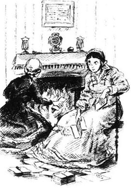
其他的信大约写于1775年至1805年之间。有一些是德博拉出生的时候母亲与外祖母之间的通信，很温馨。还有一些教区长后来写的信，里面尽是拉丁文。还有他妻子错字连篇的回信，都是关于“飘亮的小马蒂”的。还有一封信是外祖父写的，关于一个儿子的事。真奇怪，我想，我以前还从没听说过这个儿子呢。
后来我们读到了詹金斯小姐的信，我们用了两个晚上才把这些信全部读完。最长的几封信写于1805年初的泰恩河畔纽卡斯尔之行期间。当时一些人正盼着拿破仑·波拿巴在那里登陆，显然詹金斯小姐受了惊吓。
“那是令人胆寒的时代，亲爱的，”马蒂小姐解释道，“我经常在夜里醒来，觉得听到了法国人进入克兰福德的声音！我记得，我父亲写了很多反对拿破仑的布道文。”
那个儿子叫彼得·阿莱·詹金斯（“可怜的彼得！”马蒂小姐开始这么称呼他），当时正在什鲁斯伯里上学。教区长用拉丁文给儿子写信，而他儿子的回信则写得认认真真，做足了“表面功夫”，信末还要给他母亲写上一两句诸如“亲爱的妈妈，一定要给我送块蛋糕来！”之类的话。
不久，“可怜的彼得”就在学校惹了麻烦。有几封信是他为自己所做的错事向父亲道歉的，还有一张写给母亲的便条：“我最亲爱的妈妈，我会做个好孩子。我一定会的。但请你不要为了我而生病，我不配。”
看了这张便条之后，马蒂小姐哭得说不出话来。她站起来把便条拿到自己屋里，以免把它误烧了。“可怜的彼得！”她说，“他总是麻烦不断，他太喜欢逗乐开玩笑了。可怜的彼得！”
* * *
似乎彼得在学校从没取得过好成绩，所以他被带回克兰福德在家学习。
“在很多方面他都是个好孩子，”马蒂小姐说，“像亲爱的布朗上尉一样，他总是乐于帮助老人和孩子。但他的确喜欢开玩笑逗乐。我记得有一次，他装成一个到镇上来访的女士，请求见见‘作精彩布道的教区长’。我父亲对他信以为真，我是说她，并给她提供了他写的所有有关拿破仑的布道文。然后他不让彼得去钓鱼，而是让他把这些布道文全部抄写出来给她！真好笑！”
“詹金斯小姐知道这些玩笑吗？”我问道。
“哦，不！只有我一个人知道。彼得以前常说镇上的老太太们需要一些谈资。不过有时候他也不跟我讲，最后一件可怕而又糟糕的事情发生了……”
马蒂小姐走到门口把门打开。那里没人。她按了按铃，吩咐马莎到镇子那头去买些鸡蛋：“你走之后我要把门锁上，马莎。你不害怕去那里，对吗？”
“哦不，小姐！杰姆·赫恩会很自豪地和我一起去的。”
马蒂小姐的眼睛都瞪大了。想到马莎有个追求者，她仍有点儿担心。
“亲爱的，我要熄灭蜡烛，”一剩下我们她就对我说，“我们在炉火边说话也一样。”
“嗯，我记得那是一个宁静的春日。德博拉已经离开两星期了，我父亲正在镇上看望一些病人。好像彼得来到德博拉的房间里，穿上她的旧衣服和披肩，戴上她的圆帽。然后他把她床上的枕头弄成——你确信我们把门锁上了吗，亲爱的？——弄成一个穿着长长的白衣服的婴儿的样子。然后他在外面走来走去，就像照顾婴儿一样照顾着枕头，而且用人们哄婴儿的方式跟它说话。后来，哦天哪，我父亲回来看见一群人朝我家的花园里张望。起先，他以为他们是在看他的花。后来他看见了彼得。他的脸都气白了。他把衣服从彼得背上撕下来，把枕头扔到人群里，然后当着大家的面，用拐杖打彼得。亲爱的，那个春日，这孩子的一个玩笑伤透了我母亲的心，也让我父亲整个变了个人。
“彼得站着不动，直到我父亲打完。然后他慢慢地走回房里，搂着我母亲吻了吻。她还没来得及说话，他就走了。我们都不知道是怎么回事。
“她派我去问我父亲发生了什么事。‘告诉你妈我打了彼得。’他说。
“当我告诉她这一切时，我那瘦小美丽的母亲坐了下来，面色苍白。然后我们就开始在房子里到处找，那是一幢很大的老屋。我们找啊找。‘彼得，亲爱的！’我母亲轻声呼唤着，‘这里只有我。’然后她的呼喊声越来越大。‘彼得！彼得！你在哪儿？’
“一个下午过去了。连仆人们都加入了寻找。我父亲用手抱着头坐着。天快黑的时候他站了起来。‘莫利，’他开始说，‘我没想到事情会这样——’当他看见我母亲那可怜苍白的脸时，他的眼中噙满了泪水。然后，她用她的小手牵着我父亲的大手，领着他，从一个房间走到另一个房间，穿过整幢房子和花园，到处都走了一遍。我派人到霍尔布鲁克先生那里去打听彼得有没有去他那里。霍尔布鲁克先生是波尔小姐的表兄，这你知道，他对彼得很好，还教过他怎么钓鱼。但彼得不在他那里，也不在克兰福德的任何地方。”
“他在哪儿？”我问道。
“他去了利物浦。当时那里正在打仗，国王的一些船只泊在默西河口。他们很高兴能有彼得这样出色的高个子男孩儿。船长写信给我父亲，彼得也给我母亲来了信。这些信件也在这里的什么地方。”
我们点着蜡烛找到了这些信。船长写信告诉他父母，如果他们想见儿子的话就立刻去利物浦。彼得的信则恳求他母亲到他那儿去：“妈妈！我们可能要去打仗了。我希望我们能参战，我们会打败那些法国人。可是我必须先见您一面。”
“可惜我的父母去得太迟了，”马蒂小姐说，“船已经走了。”
我们默默地坐了一会儿。彼得的船开到了地中海地区，马蒂小姐最后告诉我，后来他又被派往印度。她母亲的身体一直不好，在他走后不到一年就过世了。
“她去世后的第二天——是的，第二天——她那可怜的儿子从印度给她寄来了一个包裹。那是一条又大又软的白色披肩。德博拉把它拿到我父亲那里，他手捧着它说道：‘她一直想要一条这样的披肩。我们给她披着这条披肩下葬。彼得会喜欢的。’
“我母亲葬礼那天，德博拉告诉我她永远也不会结婚离开父亲，哪怕有100个人向她求婚。这当然不大可能——我想没人向她求过婚；不过她这么说倒是出于好意。她是个很孝顺的女儿，为了我父亲她什么都做。”
“彼得先生回过家吗？”
“是的，回来过一次。我父亲带着他拜访了克兰福德的每一家，他很为他穿军装的儿子感到自豪。德博拉老是微笑着（我不记得母亲过世后我们大笑过）说她不再有用了。”
“后来呢？”我问道。
“后来彼得又出海了。过了没多久我父亲就去世了，我们不得不搬到这幢小房子里，只用一个仆人，而不是四个。可怜的德博拉！”
“彼得先生呢？”
“哦，在印度有一些大战，从那以后我们再也没听到过他的消息，我想他已经死了，虽然有时当屋里都安静下来的时候，我觉得我听到了他从街上走来的声音。但这声音总是一晃而过，而彼得却一直没有回来……是马莎吗？我去开门，亲爱的。不，我不需要蜡烛……”
“是马莎吗？”她回来的时候我问道。
“是的。我开门的时候听到一个奇怪的声音。”
“在哪儿？”
“在街上，就在外面。听起来像——”
“说话？”
“不！是接吻！”
5．'Your ladyship'
5
'Your ladyship'
One morning, before twelve o'clock, Martha came up and said that Miss Betty Barker would like to speak to her mistress. Miss Matty disappeared to change her cap and Miss Barker came upstairs, apologizing again and again for her visit.
Miss Betty Barker was the daughter of the late Mr Jenkyns's clerk. She and her elder sister (who had worked for Mrs Jamieson) had been ladies' maids. Later, they had had a hat-shop, with Lady Arley as a customer. When the sister died, Miss Betty shut the shop and became the most wonderfully dressed lady in Cranford—wearing all the bonnets and caps and ribbons that were left on her shelves.
And now Miss Betty Barker had called to invite Miss Matty to tea on the following Tuesday. She had already invited the Honourable Mrs Jamieson, she said. She invited me too—though she was clearly worried that, as my father had gone to live in Drumble, he was now in 'that awful cotton trade'. Miss Barker's own days in 'trade' had finished several years ago, and she now liked to think of herself as one of the ladies of Cranford—though she was always very respectful towards the 'best' families.
'Mrs Jamieson is coming?' asked Miss Matty.
'Yes. It's most kind of ladies such as Mrs Jamieson and yourself to call on someone like myself...' Miss Barker began to apologize again.
She was now going, she told Miss Matty, to see Mrs Forrester and Miss Pole. 'Of course, I invited you first, madam, as a rector's daughter. But we must not forget that Mrs Forrester is related to the Bigges of Bigelow Hall. So I shall invite her before I invite Miss Pole.'
'And Mrs Fitz-Adam?' asked Miss Matty.
'No, madam. I have great respect for Mrs Fitz-Adam but Mrs Jamieson would not like to meet her, I think.' Miss Barker rose. 'Will you come to my little house at half past six, Miss Matilda? That's when Mrs Jamieson has promised to come.' Miss Betty Barker curtsied and left.
Mrs Fitz-Adam was the sister of Mr Hoggins, the Cranford doctor. Their parents were respectable farmers, but they did not belong to Cranford 'society'. When Miss Mary Hoggins married Mr Fitz-Adam (whoever he was), she left the town. Then, after his death, she reappeared as a widow in black silk, and rented a large old house.
I remember that the ladies of Cranford met to discuss whether they should visit her. The matter had still not been decided when Miss Jenkyns died.
'However, as most of us are either unmarried or widows without children,' Miss Pole had said, 'we'll soon have no society at all if we don't change our rules a little.'
So everybody called on Mrs Fitz-Adam—everybody except Mrs Jamieson, who was related, of course, to the family of a lord. She used to show how important she was by never seeing or speaking to Mrs Fitz-Adam when they met at the Cranford parties. Mrs Fitz-Adam was large and, when Mrs Jamieson came in, she always stood up and curtsied very low. But Mrs Jamieson still did not see her.
* * *
It was a bright spring evening when the four of us—Miss Matty, Mrs Forrester, Miss Pole and myself—met outside Miss Barker's house. We heard loud whispers inside. 'Wait, Peggy! Wait until I've run upstairs! Then, when I cough, open the door.'
The cough came. Immediately, a maid opened the door and showed us into a small room that had been the shop. We uncovered our caps and shook our skirts. Then we walked up the narrow stairs to Miss Barker's drawingroom. Kind, gentle Mrs Forrester was given the second place of honour. The first place, of course, was for the Honourable Mrs Jamieson, who soon came heavily up the stairs.
And now Miss Betty Barker was a proud, happy woman! Peggy the maid came in with a generous trayful of cake. Did the ladies think this vulgar, I wondered? Clearly, they did not. All the cake disappeared. I saw Mrs Jamieson eat three pieces, slowly, with an expression not unlike a cow's.
After tea, the ladies played cards—all except myself (I was rather afraid of the Cranford ladies at cards) and Mrs Jamieson, who fell asleep in her armchair. I enjoyed watching the four ladies' caps at the card-table, and hearing Miss Barker's 'Sssh, ladies, please! Mrs Jamieson is asleep!'
Then the door opened. Mrs Jamieson woke up, and Peggy came in with another trayful of good things! We did not usually eat supper, but politely (and hungrily) we gave in. We even accepted a little drink...
Suddenly, Mrs Jamieson gave us some news. 'My sister-in-law, Lady Glenmire, is coming to stay with me.'
'Indeed!' said everyone. Then there was a pause. Did we have the right dresses in which to appear before Lady Glenmire? We felt very excited and unsure.
Not long after this, the little party came to an end. Mrs Jamieson got into her carriage, and the rest of us walked home along the quiet little street.
At twelve next day, Miss Pole appeared at Miss Matty's. 'What should we call Lady Glenmire?' she asked anxiously. 'Must we say "your ladyship" instead of just "you"? And "my lady" instead of "madam"? You knew Lady Arley, Miss Matty. What did you call her?'
Poor Miss Matty! She took off her glasses and she put them on again, but she could not remember. 'It was so long ago,' she said, 'and I only ever saw her twice. Oh dear, how stupid I am!'
'Then I'd better go and ask Mrs Forrester,' said Miss Pole. 'We don't want Lady Glenmire to think we know nothing about polite society here in Cranford.'
'Who is Lady Glenmire exactly?' I asked when Miss Pole had gone.
'My dear, she's the widow of Lord Glenmire, and he was Mr Jamieson's elder brother. But I wonder what we should call her...'
Miss Matty's worrying was unnecessary. Mrs Jamieson was the next person who arrived—and Mrs Jamieson, most impolitely, made it clear that she did not wish the Cranford ladies to visit her sister-in-law.
'Well!' said Miss Pole, who returned soon afterwards, very red and annoyed. 'So we must not call on Lady Glenmire! Only the best county families are acceptable visitors, and Cranford society is not good enough, it seems! Yes, I met Mrs Jamieson on her way from here to Mrs Forrester's, and she told me. I wish I'd said something sharp. Who is this Lady Glenmire anyway? Only the widow of a Scottish lord, and the fifth daughter of some Mr Campbell.' Miss Pole, usually so kind and calm, was really annoyed. 'And I ordered a new cap this morning, in order to be quite ready!'
When we came out of church on Lady Glenmire's first Sunday in Cranford, we carefully turned our backs on Mrs Jamieson and her sister-in-law. We did not even look at Lady Glenmire, though we very much wanted to know what she was like.
Afterwards we questioned Martha, however, and Martha had used her eyes well. 'The little lady with Mrs Jamieson, you mean? She was wearing a rather old black silk dress and she had bright black eyes. She looked up and down the church, like a bird, and lifted her skirts when she came out, very quick and sharp. She's more like the landlady at the George Inn than a real lady!'
'Sssh, Martha!' said Miss Matty. 'That's not respectful.'
Another Sunday passed, and we still turned away from the two widows. By this time, Lady Glenmire was perhaps getting a little bored at Mrs Jamieson's. Whatever the reason, Mrs Jamieson suddenly sent us invitations to a small party. Her man Mulliner brought them himself, coming as usual to the front door instead of to the back like other servants.
Miss Matty and I quietly decided not to accept ours. But before we had replied, Miss Pole arrived.
'The invitation is for Tuesday,' Miss Matty told her. 'If you bring your knitting and drink tea with us that evening, I'll have a good reason to refuse.'
I saw Miss Pole's expression change. 'You're not going? Oh, Miss Matty, you must go! We can't let Mrs Jamieson think we care about anything she says. I'm ready to "forgive and forget". As a rector's daughter, you should do the same...'
The fact was that Miss Pole had a new cap and wanted to wear it. So in the end Miss Matty bought a new cap too, and so did Mrs Forrester, and we all went to Mrs Jamieson's party.
Mrs Jamieson's drawing-room was not a comfortable room. Neither she nor Mulliner—of whom she seemed a little afraid—did anything to make us feel welcome. Lady Glenmire arranged the chairs agreeably for us, however. Now that we could look at her, we saw that she was a bright little woman of middle age, who had been very pretty when she was young.
We were all silent at first, unsure what to say to 'my lady'. At last Miss Pole spoke. 'Has your ladyship seen the dear Queen lately?' she asked, and looked proudly round at us.
'I've never seen her in my life,' said Lady Glenmire in a sweet Scottish voice. 'In fact, I've only been to London twice. Have you been to Edinburgh?' she asked hopefully.
None of us had, but Miss Pole had an uncle who once passed a night there. So that was very pleasant.
Mrs Jamieson meanwhile began to wonder aloud why Mulliner did not bring in the tea, but she did not want to trouble Mulliner by ringing the bell. In the end, Lady Glenmire grew quite impatient, and rang the bell herself. Mulliner appeared, looking surprised.
'Lady Glenmire rang,' said Mrs Jamieson. 'I believe it was for tea.'
Tea came at last. The plates were very thin and fine. So was the bread-and-butter. We were grateful to Lady Glenmire for ordering more of it, and a comfortable conversation developed. Soon the ladies were playing cards happily together and even Miss Pole quite forgot to say 'my lady' and 'your ladyship'.
We learnt during the evening that Lady Glenmire had no plans to return quickly to Edinburgh. We were rather glad. We liked her.
'Isn't walking very unpleasant?' asked Mrs Jamieson as we prepared to leave. (This was a regular question from her as she had a carriage and never walked anywhere.)
'Oh no, not at night!' said Miss Pole. 'Such peace after the excitement of a party!' said Mrs Forrester. 'The stars are so beautiful!' said Miss Matty.
So we walked home under the stars, feeling very grand, after drinking tea with 'my lady'.
'My dears,' said Miss Pole next day, very pleased. 'Did you notice her dress? So inexpensive!'
clerk n. person employed in an office, a shop, etc. to keep records, accounts, etc. 文书；办事员；事务员。
Lady n. title used with the surname of the wives of some nobles. 夫人（某些贵族妻子的尊称，用时带姓）。
widow n. woman whose husband has died and who has not married again. 寡妇；孀妇。
uncover v. remove a cover or covering from (sth.). 移去（某物的）覆盖物；揭开（某物的）盖子。
generous adj. given freely; plentiful. 慷慨给予的；大量的；丰富的。
unlike prep. not like; different from sth. （与某事物）不同；不像。
pause n. temporary stop in action or speech. （行为、讲话中的）暂停，临时中止。
unsure adj. having little self-confidence. 缺乏自信。
ladyship n. (also Ladyship) a title used in speaking to or about a titled lady. 夫人；小姐（称呼或提及有头衔的女子时用作尊称）。
acceptable adj. welcome. 受欢迎的。
sharp adj. (derog.) intended or intending to criticize, injure, etc.; harsh; severe. （贬）中伤的；尖刻的；严厉的。
turn away from sb. stop facing or looking at sb. 转过脸不面对或不再看着某人。
forgive and forget dismiss from one's mind all unkind feelings and the desire to blame and punish sb. 不念旧恶；不记某人的仇。
unpleasant adj. not pleasant; disagreeable. 使人不愉快的；不合意的。
regular adj. habitual; constant. 习惯性的；固定不变的。
“尊敬的夫人”
5．“尊敬的夫人”
一天早上，还不到12点，马莎上来说贝蒂·巴克小姐想和女主人说话。马蒂小姐立刻去换帽子。巴克小姐上楼来，一再为自己的贸然造访而道歉。
贝蒂·巴克小姐是已故詹金斯先生的书记员的女儿。她和她姐姐（她曾为贾米森夫人工作）以前一直给女士们做女仆。后来，她们开了个帽店，阿莱夫人是她们的主顾之一。姐姐死后，贝蒂小姐关掉帽店，成了克兰福德最会穿衣打扮的女士——戴着货架上剩下的各种圆帽、无边帽和丝带。
现在贝蒂·巴克小姐登门邀请马蒂小姐下周二去喝茶。她说她已经邀请了尊敬的贾米森夫人。她也邀请了我——虽然她明显地有些不安，因为我父亲已经去德莱姆伯尔住了，现在正在从事着“可怕的棉花交易”。巴克小姐自己“做生意”的日子几年前就结束了，现在她喜欢把自己视为克兰福德女士中的一员——虽然她对“最好的”人家总是心怀敬意。
“贾米森夫人也要来吗？”马蒂小姐问道。
“是的，像贾米森夫人和您这样的女士能来造访我这样的人真是太好了……”巴克小姐又开始客气了。
她现在要走了，她告诉马蒂小姐说，她要去见福里斯特夫人和波尔小姐。“当然，我最先邀请的是您，小姐，您是教区长的女儿。不过我们也不应该忘记，福里斯特夫人和比奇洛厅的比格一家有亲戚关系。所以我应该先邀请她，再邀请波尔小姐。”
“菲茨-亚当夫人呢？”马蒂小姐问。
“不，小姐。虽然我很尊敬菲茨-亚当夫人，但我想贾米森夫人不愿见到她。”巴克小姐站起身，“您6点半到寒舍来行吗，马蒂尔达小姐？贾米森夫人答应那个时间到。”贝蒂·巴克小姐行了个屈膝礼，然后就走了。
菲茨-亚当夫人是克兰福德的医生霍金斯先生的妹妹。他们的父母都是受人尊敬的农民，不过他们不属于克兰福德的“上流社会”。玛丽·霍金斯小姐嫁给菲茨-亚当先生（管他是谁）后，就离开了镇子。后来他去世之后，她又穿着寡妇的黑色丝绸衣服重新在镇上露面，而且租住在一幢很大的老房子里。
我记得克兰福德的女士们曾经碰面讨论过是否要去拜访她。不过直到詹金斯小姐去世，这件事仍然悬而未决。
“不过，我们大都要么没结婚，要么守寡无子，”波尔小姐说，“如果我们不稍稍改变一下规则，要不了多久我们的上流社会就不存在了。”
所以大家都去拜访了菲茨-亚当夫人——只有贾米森夫人除外，当然，她是和一位勋爵的家族有亲戚关系的。她以前在克兰福德的聚会上从来不见或者不和菲茨-亚当夫人说话，以此来显示自己的重要地位。菲茨-亚当夫人比较胖，每当贾米森夫人进来的时候，她都站起来深深地行个屈膝礼，但贾米森夫人对此视若不见。
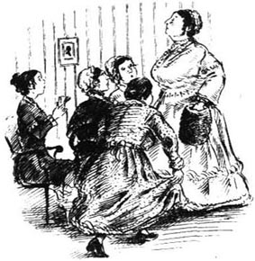
* * *
那是一个愉快的春季之夜，我们四个人——马蒂小姐、福里斯特夫人、波尔小姐和我——在巴克小姐家门外碰面。我们听到里面大声耳语的声音。“等一下，佩吉！等我跑到楼上！然后，我一咳嗽，就开门。”
咳嗽声响了。一个女仆马上打开了门，把我们带进一间曾用作商店的小屋。我们摘下帽子，抖了抖裙子，然后就走上窄窄的楼梯来到巴克小姐的休息室。温柔和善的福里斯特夫人坐了第二席，首席当然是留给尊敬的贾米森夫人的，而她不久就迈着沉重的脚步走上楼来。
现在贝蒂·巴克小姐成了一个自豪而幸福的女人！女仆佩吉端进来一大盘蛋糕。我想知道，女士们觉得这俗气吗？显然没有。所有的蛋糕都吃完了。我看见贾米森夫人吃了三块蛋糕，吃得很慢，脸上的表情和母牛倒有些相似。
茶点过后，女士们玩起了扑克——只有我（我挺害怕玩牌时的克兰福德女士们）和贾米森夫人没参加，她在扶手椅里睡着了。我喜欢看女士们放在牌桌上的四顶帽子，还喜欢听巴克小姐说“嘘，女士们，轻点儿！贾米森夫人睡着了！”
后来门开了，贾米森夫人醒了过来，佩吉又端进来一盘好东西！我们一般不吃晚饭，但出于礼貌（还有饥饿）我们让步了。我们甚至还喝了点儿酒……
突然，贾米森夫人告诉了我们一些消息：“我嫂子格兰米尔夫人，要来和我小住一阵。”
“真的！”大家说。接着是一段短暂的沉默。我们有合适的衣服穿着去见格兰米尔夫人吗？我们觉得非常激动但又不自信。
不久以后，小聚会就结束了。贾米森夫人坐进她的马车，我们剩下的人则沿着安静的小街走回家中。
第二天12点，波尔小姐出现在马蒂小姐家。“我们该怎么称呼格兰米尔夫人呢？”她着急地问，“我们必须说‘尊敬的夫人’而不说‘您’吗？还是说‘我的夫人’而不说‘女士’呢？你认识阿莱夫人，马蒂小姐。你是怎么称呼她的？”
可怜的马蒂小姐！她把眼镜摘下又戴上，但还是想不起来。“那是好久以前的事了，”她说，“而且我只见过她两次。哦，天呀，我多蠢啊！”
“那我最好去问问福里斯特夫人，”波尔小姐说，“我们可不想让格兰米尔夫人以为我们克兰福德对上流社会的事一无所知。”
“格兰米尔夫人到底是谁？”波尔小姐走了之后我问道。
“亲爱的，她是格兰米尔勋爵的遗孀，而他是贾米森先生的兄长。可我不知道我们该怎么称呼她……”
马蒂小姐的担心毫无必要。贾米森夫人是第二个到的人——而贾米森夫人以一种最无礼的方式表明她不希望克兰福德的女士们去拜访她嫂子。
“哼！”波尔小姐说道，她不一会儿就回来了，脸红红的，很生气的样子，“那么说我们不能去拜访格兰米尔夫人了！只有县里最好的人家才有资格拜访，好像克兰福德的上流社会还不够好似的！是的，我在贾米森夫人从这儿去福里斯特夫人家的路上遇到了她，她跟我说了。我真该说些刻薄话。这个格兰米尔夫人到底是谁呀？只不过是一个苏格兰勋爵的寡妇，某个坎贝尔先生的五女儿而已。”平时和善平静的波尔小姐这回可真的发火了，“我今天早晨才订了顶新帽子，为的是能做好准备！”
格兰米尔夫人在克兰福德的第一个周日，那天我们从教堂出来时，有心背朝着贾米森夫人和她嫂子。我们甚至都没看格兰米尔夫人，虽然我们很想知道她长什么样。
不过，后来我们还是问了马莎，而马莎倒看得挺清楚，“你们说的是和贾米森夫人在一起的那位小个子夫人吗？她穿一件很旧的黑丝绸裙子，眼睛又黑又亮。她上上下下地打量教堂，像个鸟儿一样，出来的时候把裙子提起来，很利索。她不像一位真正的夫人，倒更像乔治旅馆的老板娘！”
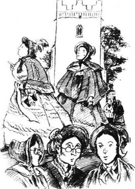
“嘘，马莎！”马蒂小姐说道，“这样可没礼貌。”
又一个周日过去了，我们仍然躲着这两位寡妇。此时，格兰米尔夫人也许在贾米森夫人家待得有些厌烦了。不管是什么原因，贾米森夫人突然给我们发来一个参加小型聚会的邀请。她的男仆马利纳亲自送来请帖，他像往常一样走到前门口，而不是像其他仆人那样到后门去。
马蒂小姐和我平静地决定不接受邀请。但我们还没有回复，波尔小姐就来了。
“邀请是在星期二，”马蒂小姐告诉她，“如果你那天晚上带着你的编织活计跟我们一起喝茶，我就有拒绝的好理由了。”
我发现波尔小姐的表情变了，“你不去吗？哦，马蒂小姐，你一定要去！我们不能让贾米森夫人觉得我们在乎她说的那些话。我准备‘既往不咎’。你是教区长的女儿，你也应该这么做……”
其实是因为波尔小姐有一顶新帽子，她想要戴它。所以最后，马蒂小姐也买了顶新帽子，福里斯特夫人也买了一顶，我们都去参加了贾米森夫人的聚会。
贾米森夫人的休息室并不舒服。她和马利纳——她好像有些怕他——都没有做任何事让我们感觉受欢迎。不过，格兰米尔夫人倒是愉快地为我们安排了座位。现在我们可以看着她了，我们发现她是个活泼的小个子的中年妇女，年轻的时候想必很美。
起先我们都沉默着，不知道该对“我的夫人”说什么。最后波尔小姐开口了。“尊敬的夫人，您最近见过女王陛下吗？”她问道，神情骄傲地看着我们。
“我这辈子从没见过她，”格兰米尔夫人用甜美的苏格兰嗓音说道，“实际上，我只到过伦敦两次。你们去过爱丁堡吗？”她满怀希望地问道。
我们谁也没去过，不过波尔小姐有个叔叔曾在那里住过一夜。那是很愉快的经历。
贾米森夫人这个时候大声地说马利纳怎么还没把茶点端上来，但她又不想按铃来麻烦马利纳。最后，格兰米尔夫人有些不耐烦，就自己按了铃。马利纳出现了，显得很惊讶。
“是格兰米尔夫人按的铃，”贾米森夫人说，“我想是要茶点吧。”
茶点终于送来了。盘子很薄，质地很好，抹黄油的面包也是如此。格兰米尔夫人又点了一些，这让我们很感激，接下来就是轻松的交谈。不一会儿，女士们就高兴地打起牌来，连波尔小姐都忘了说“我的夫人”和“尊敬的夫人”。
那天晚上我们得知格兰米尔夫人短期内不打算返回爱丁堡。我们很高兴。我们喜欢她。
“走路不是太让人郁闷了吗？”我们准备离开的时候贾米森夫人问道。（她常这么问，因为她有马车，从来不步行出门。）
“哦不，晚上不是的！”波尔小姐说。“晚会的兴奋过后是那么平静！”福里斯特夫人说道。“星星很美！”马蒂小姐说。
于是我们在星光下步行回家，和“我的夫人”一起饮过茶之后，感觉非常愉快。
“亲爱的，”波尔小姐第二天很高兴地说，“你们注意到她的裙子了吗？一点儿也不贵重！”
6．Signor Brunoni
6
Signor Brunoni
Soon after Mrs Jamieson's party, my father became ill and I had to go home to Drumble. I stayed there for most of the rest of the year. Then, at the end of November, I received a mysterious letter from Miss Matty.
She hoped my father was well, she wrote, and could I tell her if turbans were fashionable? Something so exciting was going to happen. She must have a new cap, and perhaps she was too old to care about such things, but she would very much like a turban... Oh, and would I like to come for a visit next Tuesday? Sea-green was her favourite colour...
Fortunately, there was a note of explanation at the end: 'My dear, Signor Brunoni is going to show his wonderful magic at Cranford Assembly Room next Wednesday evening.'
I was very glad to accept the invitation from my dear Miss Matty, and very anxious to stop her wearing a great turban on her gentle little head. So I bought her a pretty blue cap instead, which disappointed her terribly. She followed me into my bedroom, and I think she was still hoping to find a sea-green turban somewhere inside my cap-box.
'I'm sure you tried, my dear,' she said sadly, looking at the cap. 'It's just like the caps all the ladies in Cranford are wearing. I suppose turbans haven't arrived in Drumble yet?'
She left the room to welcome Miss Pole and Mrs Forrester to tea. 'It was silly to expect anything fashionable from the Drumble shops, I suppose,' I heard her tell them. 'Poor girl! She did her best.'
But Miss Pole had had an adventure, and was waiting impatiently to describe it. 'I happened to go into the George Inn today,' she began when I entered. 'My Betty has a cousin who's a maid there, you know, and I thought Betty would like news of her. Well, there was no one around, so I walked up the stairs and into the Assembly Room. And there I saw that people were getting things ready for tomorrow night. I was just going behind the curtain, by mistake, when a gentleman stepped forward. He asked in very pretty broken English if he could help me. He didn't want me to see behind that curtain, it seemed. So, most politely, he showed me out of the room.
'Wait! You've not heard all my story yet! As I was going downstairs again, I met Betty's cousin—and she told me that the gentleman was Signor Brunoni! And then, it was so strange, I met the same gentleman again on his way up!'
So Miss Pole had met the conjurer himself! Oh, what questions we asked her! 'Did he have a beard?' 'Was he young or old?' 'Was he fair or dark?' 'What did he really look like?'
We talked about magic all evening. Miss Pole did not believe in it: conjurers' tricks could be learnt from a book, she said. Mrs Forrester believed in magic, ghosts, everything. Miss Matty was not sure what she believed—and always agreed with the last speaker.
The next evening, the four of us met in gentle excitement at the entrance to the George Inn. From there, we went upstairs together to the Assembly Room. Miss Pole asked a waiter if any of the county families were coming, as they would expect to sit in the front row. When he shook his head, Miss Matty and Mrs Forrester sat in the front row, where Lady Glenmire and Mrs Jamieson soon joined them. Miss Pole and I sat immediately behind, in the second row. All the shopkeepers sat together at the back, talking and laughing happily. I got rather bored with waiting, and wanted to turn round and look at them, but Miss Pole begged me not to. It was not the correct way to behave, she said. So our group was dull and quiet. Mrs Jamieson fell asleep.
Finally, the curtain went up. We saw, at a little table, a fantastic-looking gentleman in Turkish dress, with a long beard and a turban.
Miss Matty looked at me. 'You see, my dear, people are wearing turbans,' she said sadly.
But we had no time for more conversation. The Grand Turk rose and said he was Signor Brunoni.
'I don't believe him!' said Miss Pole loudly. 'Signor Brunoni didn't have a beard.'
This woke Mrs Jamieson. She opened her eyes wide, and the Grand Turk, who had looked crossly at Miss Pole, began his magic.
Now we were surprised and delighted—all except Miss Pole. Such tricks! I could not imagine, even with Miss Pole's whispered explanations, how he did them. It was all so wonderful that Miss Matty and Mrs Forrester became anxious.
'Do you think it's quite right for us to come and see such things?' I heard Miss Matty whisper. 'Is there something not quite—?' She shook her head.
'I was asking myself the same question,' Mrs Forrester whispered back. 'It's so very strange. I'm certain that was one of my ribbons on his table just now...'
Suddenly, Miss Matty half-turned towards me. 'My dear, will you look round (you don't live in the town—no one will talk about it), and see if Mr Hayter the rector is here?'
I looked round and saw the tall, thin rector among his schoolboys. His kind face was all smiles, and the boys were laughing. I told Miss Matty that the Church approved of Signor Brunoni, and she began to enjoy herself again.
* * *
Soon the excitement was over. Signor Brunoni disappeared from Cranford, and the only result of his visit was a new readiness among the ladies to believe in strange happenings.
Six weeks later, however, Miss Pole had another adventure. Lady Glenmire was now a friend, and one morning the two of them went out walking together. About three miles from Cranford, on the road to London, they stopped at a small inn called the 'Rising Sun' to ask the way across the fields.
'A little girl came in while we were there,' Miss Pole told us that afternoon. 'The landlady said she was the only child of a married couple who were staying in the house. Now, listen to this! About six weeks ago, the landlady said, a horse-and-cart turned over right outside the inn. In the cart were two men, one woman and this child, plus a great box of strange things. One of the men, the child's father, was hurt and has been at the inn ever since. The other man (his twin brother, she believes) drove quickly away in the cart, and took the box with him. Well, my dears, the man who was hurt is Signor Brunoni! We met his wife—a good, honest person—and she says his real name is Samuel Brown!'
The conjurer's family, it seemed, now had no money, and Miss Pole and Lady Glenmire had decided to help them. In fact, Lady Glenmire had gone straight to Mr Hoggins, the Cranford doctor, to beg him to ride over to the 'Rising Sun' that same afternoon.
Miss Matty and I were now as interested in this news as Miss Pole was. So was Mrs Forrester when she heard about it. The ladies waited anxiously for Mr Hoggins's opinion. When Mr Hoggins said that, with care, the conjurer would get better, they brought him to Cranford. Lady Glenmire promised to pay the doctor's bills. Miss Pole found comfortable lodgings for the family. Miss Matty sent a carriage for them. Mrs Forrester was not too proud to help, either. Though she was related to the Bigges of Bigelow Hall, here she was, taking nice things to eat to a poor, sick conjurer! It was wonderful to see all the kindness.
Soon Miss Matty was making a coloured ball for the little girl, Phoebe, to play with. 'I've always been so fond of children,' she said to me sadly as we sat by the fire, 'and I dream sometimes that I have a little child of my own... I didn't expect to be "Miss Matty Jenkyns" all my life, you know,' she went on after a pause. 'But the person I expected to marry is dead, and he never knew why I refused him. Ah well, it doesn't matter now. I am very happy, my dear. I have such kind friends,' she continued, taking my hand.
As I knew about Mr Holbrook, I could think of nothing suitable to say, and we were both silent.
One day soon after this, I asked the conjurer's wife if Miss Pole's story about twin brothers was true.
'Quite true,' she said, 'though I don't know how anyone can mistake Thomas for the real Signor Brunoni. Thomas is a good man, and he paid all our bills at the Rising Sun, but he can't do the ball-trick as well as my husband can. And he's never been in India, so he doesn't know how to wear a turban.'
'Have you been in India?' said I, rather surprised.
She told me that her husband had been sent there in the army. She had gone with him but, one after another, their children had died out there. 'That cruel India!' she said. 'I was going mad. When Phoebe, this last child, was born, I told my Sam I must return to England.'
So, carrying her baby, she had left her husband to go to Calcutta. She had walked a hundred miles, from village to village. People had given her food and milk, she said. And once, when the baby was ill, she had been helped by a kind Englishman living among the Indians.
'And you reached Calcutta safely?'
'Yes. And after two years, Sam was able to come home. He'd learnt some tricks from an Indian, so he began to work as a conjurer. Then, after a while, he employed his twin brother to help him.'
'And Phoebe was well again?'
'Yes. That good kind Aga Jenkyns at Chunderabaddad had helped me to save her.'
'Jenkyns!' said I.
'Yes. Jenkyns. I'm beginning to think all people with that name are kind. Here in Cranford, there's that nice old lady who comes every day to see Phoebe!'
mysterious adj. not easily understood; full of mystery. 神秘的，难解的。
turban n. head-dress (worn esp. by Muslims and Sikhs) made by winding a length of cloth tightly round the head. 头巾（尤指穆斯林和锡克教徒用的）。
Signor n. used as a title equivalent to Mister. 先生。
assembly n. coming together of a group of people for a specific purpose. 集会；集合。
suppose v. accept as true or probable; believe; imagine; assume. 认定；认为；猜想。
adventure n. unusual, exciting or dangerous experience or undertaking. 不寻常的、有刺激性的或危险的经历或工作；奇遇；冒险。
conjurer n. person who performs conjuring tricks. 变戏法的人；魔术师。
trick n. skillful act performed for entertainment, esp. one involving illusion. 戏法；把戏；（尤指）魔术手法。
behave v. act or conduct oneself in the specified way. （举止或行为）表现。
fantastic adj. wild and strange. 荒诞的；奇异的。
delighted adj. very pleased, showing delight. 非常高兴的；愉快的。
approve v. say, show or feel that sth. is good or acceptable or satisfactory. 赞成；认可；满意。
twin n. either of a pair of children or young animals born of the same mother at the same time. 双胞胎之一；孪生儿之一。
lodging n. room or rooms (not in a hotel) rented for living in. 寄宿舍（非指旅馆中）。
employ v. give work to sb., usu. for payment. 雇用某人。
布鲁诺尼先生
6．布鲁诺尼先生
贾米森夫人的聚会后不久，我父亲就生病了，我不得不回德莱姆伯尔的家去。这一年余下的大部分时间我都待在那里。后来，11月底，我收到了马蒂小姐的一封神秘来信。
她希望我父亲身体健康，她写道，还问我能不能告诉她穆斯林头巾是否时髦。有些非常激动人心的事就要发生了。她必须有一顶新帽子，还说也许她太老了，不该在乎这样的事情，不过她很想要一条穆斯林头巾……哦，她问我下周二愿不愿去一趟？她最喜欢海蓝色……
好在最后她附加了一条解释：“亲爱的，布鲁诺尼先生下周三晚上要在克兰福德大会厅举行神奇的魔术表演。”
我很高兴接受亲爱的马蒂小姐的邀请，也很急于阻止她在她那高贵的小脑袋上戴一条大大的穆斯林头巾。所以我给她买了一顶漂亮的蓝色无沿帽代替，这让她极为失望。她跟着我走进我的卧室，我想她仍旧希望在我的帽盒里找到海蓝色的穆斯林头巾。
“我肯定你试着找过了，亲爱的，”她看着帽子，难过地说，“这跟克兰福德所有女士们戴的帽子一样。我想德莱姆伯尔还没有穆斯林头巾吧？”
她离开房间去迎接波尔小姐和福里斯特夫人来喝茶。“我想，指望德莱姆伯尔的商店里会有时髦的东西实在是太不明智了。”我听到她对她们说，“可怜的姑娘！她已经尽力了。”
但波尔小姐有一番奇遇，正急于讲给大家听。“我今天碰巧去了乔治旅馆。”我进去的时候她开始说道，“我家贝蒂有个表妹在那里当女仆，你们知道，我以为贝蒂想听到她的消息。嗯，周围没人，所以我就上了楼梯走进了大会厅。在那儿，我看见有人正在为明天晚上做准备。我不小心走错了，正好走到幕布后面去了，就在那时，一位先生走上前来。他操着一口蹩脚的英语问我有什么他可以帮忙的。似乎他不想让我看见幕布后面的东西。所以，他非常礼貌地把我带出了那个房间。
“等等！你们还没听我讲完呢！我下楼的时候，碰到了贝蒂的表妹——她告诉我那位先生就是布鲁诺尼先生！后来，真奇怪，我在那位先生上楼的时候又碰到了他！”
那么说波尔小姐已经见过魔术师本人了！哦，我们问她的都是些什么问题啊！“他有胡子吗？”“他年轻还是年老？”“他皮肤是白还是黑？”“他到底长什么样？”
我们整晚都在谈论魔术。波尔小姐不相信魔术：魔术师的把戏可以从书里学到，她说。福里斯特夫人相信魔术、鬼怪，所有的东西。马蒂小姐拿不准自己到底信什么——她总是和最后说话的人意见一致。
第二天晚上，我们四人在乔治旅馆门口碰面，个个都有些激动。我们从那里一起上楼来到大会厅。波尔小姐问一个侍者县上有没有哪家来，因为他们可能会坐在前排。侍者摇了摇头，于是马蒂小姐和福里斯特夫人就在前排就坐，格兰米尔夫人和贾米森夫人不久也和她们坐在了一起。波尔小姐和我坐在了紧靠她们后面的第二排。所有的店主们都坐在后排高兴地说说笑笑。我等得有些不耐烦了，想回头看看他们，可是波尔小姐求我不要那么做。那样做有失风度，她说。所以我们这群人安安静静的，无趣得很。贾米森夫人都睡着了。
终于，幕布拉起来了。我们看见在一张小桌子旁，坐着一位长相怪异的男士，他身穿土耳其服装，留着长长的胡须，头戴穆斯林头巾。
马蒂小姐看着我。“你看，亲爱的，人们现在都戴穆斯林头巾。”她难过地说。
但是我们没时间多说了。那位高贵的土耳其人站起来自称是布鲁诺尼先生。
“我不信！”波尔小姐大声说，“布鲁诺尼先生没有胡子。”
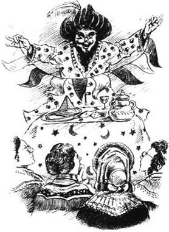
这吵醒了贾米森夫人。她睁大了眼睛，而那位高贵的土耳其人刚才还在生气地看着波尔小姐，现在则开始表演魔术了。
现在我们又惊奇又高兴——除了波尔小姐。这么有趣的戏法！即便有波尔小姐在低声解释，我仍无法想像他到底是怎么做的。简直太棒了，连马蒂小姐和福里斯特夫人都有些跃跃欲试了。
“你觉得我们来这儿看这样的东西合适吗？”我听到马蒂小姐低声说，“有没有什么不太——？”她摇了摇头。
“我也在问自己同样的问题，”福里斯特夫人低声回答，“真奇怪。我确信刚才桌子上放着我的一条丝带……”
突然，马蒂小姐半侧过身朝向我：“亲爱的，你能不能朝四周看看（你不住在镇上——没人会谈论这件事），看看教区长海特先生在不在？”
我朝四周看去，发现又高又瘦的教区长正坐在他的男学生们中间。他慈祥的脸上满是笑容，而孩子们都在大声欢笑。我告诉马蒂小姐教会允许布鲁诺尼先生这么做，她就又开始欣赏起表演了。
* * *
激动人心的表演不久就结束了。而布鲁诺尼先生也从克兰福德消失，他这次造访的唯一结果就是女士们开始相信各种奇怪的事情了。
不过，六个星期后，波尔小姐又有了一次奇遇。格兰米尔夫人现在已经成了她的朋友，一天早晨，她们俩一起外出散步。她们沿着去伦敦的路走出克兰福德大约三英里，在一家叫作“日出”的小旅馆前停了下来，想要问问穿过田野的路怎么走。
“我们在那儿的时候进来一个小女孩儿，”那天下午波尔小姐告诉我们，“老板娘说她是住在这里的一对夫妇的独生女。现在，听着！老板娘说，大约六个星期前，有一辆马车驶到了旅馆门口。车里有两个男人、一个女人和这个孩子，另外还有一大箱奇怪的东西。其中一个男人，也就是孩子的父亲，受了伤，来了以后一直住在旅馆里。另一个男人（他的孪生兄弟，她认为）很快驾车离开了，箱子也一并带走了。哦，亲爱的，受伤的那个男人是布鲁诺尼先生！我们见到了他妻子——一个诚实的好人——她说他的真名是塞缪尔·布朗！”
似乎魔术师一家现在没钱了，波尔小姐和格兰米尔夫人决定帮助他们。实际上，格兰米尔夫人径直走到克兰福德的医生霍金斯先生那里，请求他当天下午骑马去日出旅馆。
现在马蒂小姐和我像波尔小姐一样对这个消息感兴趣，福里斯特夫人听到此事后也是如此。女士们焦急地等待着霍金斯先生的诊断意见。当霍金斯先生说，如果照料得当，魔术师就会好起来时，她们就把他带到了克兰福德。格兰米尔夫人答应支付他的医疗费，波尔小姐为这家人找到了一个舒适的住处，马蒂小姐给他们派了一辆马车。福里斯特夫人也不甘落后，虽然她和比奇洛厅的比格一家有亲戚关系，但她现在也带来好吃的东西给这个可怜的、生病的魔术师！看到所有这些善意的举动真好。
不久，马蒂小姐就给这个叫菲比的小女孩儿做了一个彩球让她玩儿。“我一直很喜欢小孩儿，”我们坐在壁炉边的时候她难过地对我说，“有时候我梦到自己有个小孩子……我可没想到自己一辈子都是‘马蒂·詹金斯小姐’，你知道，”她停了一会儿又继续说，“但是我想嫁的人已经死了，而且他永远也不会明白我为什么拒绝他。唉，现在也不重要了。我很高兴，亲爱的。我有这么好的朋友。”她拿起我的手，接着说道。
因为我了解霍尔布鲁克先生的事情，所以不知道该说些什么合适的话，我们俩就都沉默了下来。
不久之后的一天，我问魔术师的妻子，波尔小姐说的孪生兄弟的事是不是真的。
“没错，”她说，“虽然我不知道人们怎么会把托马斯错当成真的布鲁诺尼先生。托马斯是个好人，他替我们支付了日出旅馆的所有账单，不过他那个玩球的戏法没有我丈夫玩得好。他也从没去过印度，所以他不知道怎么戴穆斯林头巾。”
“你去过印度吗？”我说，感觉很惊奇。
她告诉我她丈夫曾被派到那里参军。她也和他一起去了，可是，他们的孩子却一个接一个地死在那里。“残忍的印度！”她说，“我都快疯了。最后一个孩子菲比出生的时候，我告诉萨姆我一定要回英国。”
所以，她抱着孩子，离开丈夫去了加尔各答。她走了100英里，从一个村庄走到另一个村庄。人们给她食物和牛奶，她说。有一次，孩子生病了，一个生活在印度人中间的好心的英国人帮了她。
“你安全抵达了加尔各答吗？”
“是的，两年后，萨姆也可以回家了。他从一个印度人那里学到了一些把戏，于是就开始当魔术师。后来又过了一段时间，他就雇自己的孪生兄弟来帮忙。”
“菲比的病也好了？”
“是的，昌德拉巴达那位好心的阿加·詹金斯帮我救活了她。”
“詹金斯！”我说。
“是的，詹金斯。我觉得所有姓这个姓的人都是好人。在克兰福德这个地方，就有个好心的老夫人每天都来看望菲比！”
7．Sudden news
7
Sudden news
An idea had come into my head. Was Peter Jenkyns of Cranford now the Aga jenkyns of Chunderabaddad? Could it be possible? I decided to ask the Cranford ladies some questions, without explaining what I suspected.
I did not learn much. Miss Pole believed that Peter had become something important in Tibet. Mrs Forrester said he had been rather handsome. They both thought the last news of him had come from India. That was almost all I discovered.
Meanwhile, however, something extraordinary was going on around us and we all, even Miss Pole, failed to notice! I remember the morning she came to tell us. It was nearly calling-time. Miss Matty and I had just been discussing Signor Brunoni and that clever Mr Hoggins when someone knocked at the door.
We were hurrying to change our caps when Miss Pole ran up the stairs. 'It's not twelve, I know,' she called, 'but I must speak to you. What do you think? Mr Hoggins is going to marry Lady Glenmire!'
'Marry?!' we said.
'Marry! I heard it in Mr Johnson's shop.'
'Perhaps it's not true,' said Miss Matty hopefully.
'It's true,' said Miss Pole. 'I went straight to Mrs Fitz-Adam, and she said her brother and Lady Glenmire had come to an understanding. "Understanding"! Such a vulgar word! But my lady will have to hear many vulgar words now. I believe Mr Hoggins drinks beer at supper every night...'
'Marry!' repeated Miss Matty. 'Well! Two people that we know going to be married. It's coming very near!'
'I'm not surprised that Mr Hoggins likes her,' I said. 'But how can she like Mr Hoggins?'
'Oh, Mr Hoggins is rich and very pleasant-looking,' said Miss Matty, 'and very kind.'
We began to wonder what the Honourable Mrs Jamieson would say. Mrs Jamieson had recently gone down to Cheltenham in the care of Mulliner, leaving Lady Glenmire to manage her house and to stop her maids taking followers. And while she was away, Lady Glenmire had herself taken a follower! A follower whom Mrs Jamieson thought was vulgar and not good enough for Cranford society! Had Mr Hoggins ever visited Lady Glenmire at Mrs Jamieson's house, we wondered? Or had they only met at the lodgings of the poor sick conjurer? Certainly, they had both been very kind to him.
Well! What next? When would the wedding be? How could servants announce a married couple as 'Lady Glenmire and Mr Hoggins'? Would anyone visit the couple? Oh dear, would we have to choose between visiting dull Mrs Jamieson and bright Lady Glenmire?
Next time we saw Lady Glenmire, in church, she looked happy and younger than before. Mr Hoggins too looked happy, and he was wearing his first new pair of boots for twenty-five years. But none of the Cranford ladies said anything to either of them about their marriage. Until Mrs Jamieson returned, indeed, we did not know what to say.
But it was now March, and Mr Johnson announced the arrival of the spring fashions at his shop. Miss Matty had been waiting for this before buying herself a new silk dress. In our excitement we forgot, for the moment, about Lady Glenmire.
On the Tuesday on which Mr Johnson was going to show the new fashions, two letters were waiting for us on the breakfast table. One was to me from my father—a dull, businessman's letter. There were unpleasant reports about the Town and County Bank, he wrote, and he hoped Miss Matty did not still have shares in it. He had warned her sister years ago not to put money into that bank, but she had not listened to his advice.
'Who is your letter from, my dear?' asked Miss Matty. 'Mine is from the Town and County Bank, asking me to an important meeting of the shareholders in Drumble on Thursday. It's kind of them to remember me.'
I was alarmed at this 'important meeting', and was afraid that my father's fears were right. However, bad news always came fast enough, so I decided to say nothing for the moment. I simply told Miss Matty that my father sent his best wishes, then I changed the conversation. 'What time should we go to see the fashions?' I asked.
'Well, the correct time to go is after twelve o'clock,' she said. 'But then all Cranford will be there, and I'd rather not look at dresses and caps in front of everyone. So let's go this morning after breakfast. I need half a pound of tea. We can buy that, and choose the silk for my new dress. Then we can go quietly upstairs, look at the fashions and decide the style for my dress.'
The young men at Mr Johnson's wore their best clothes and their best smiles. Miss Matty bought her tea, then began looking at the silks. It was Cranford's market-day, and many country people came into the shop.
One honest-looking man stood next to us and asked to look at some shawls for his wife. He hesitated. Miss Matty hesitated too. She would like a sea-green silk. No, that lovely red. No, that bright yellow...
Our neighbour finally chose a shawl and held out a five-pound note.
The shop-boy looked at the note. 'Town and County Bank! I think we were warned this morning not to accept this bank's notes. I'll just ask Mr Johnson...'
'What!' The poor farmer could not believe it.
Miss Matty forgot her new silk dress. 'Which bank did your note belong to?' she asked him.
'Town and County.'
'Mr Johnson's very sorry, Mr Dobson,' the boy said as he brought the note back, 'but the bank's notes are worth less.'
'I don't understand,' Miss Matty said to me in a 1ow voice. 'Town and County is my bank, isn't it?'
'Yes... This yellow silk will match the ribbons in your new cap,' I continued quickly, holding it up and wishing the man would go away.
'Never mind the silks for a moment, dear,' she said, putting her hand gently on mine and looking at the farmer. 'I'll give you five pound coins for your note, Mr Dobson,' she said. 'But there must be some mistake. I'm a shareholder in that bank and I've not been told about any problem.'
The shop-boy whispered across the table to Miss Matty. She looked at him uncertainly. 'I don't understand business,' she said. 'But if honest people are going to lose their money because they have our notes, then... Oh, I can't explain myself. Just give me your note, please, Mr Dobson, and then you can take the shawl for your wife.'
The farmer looked at her gratefully, but hesitated for a moment. 'I wouldn't like somebody else to lose money instead of me,' he said. 'But, you see, madam, five pounds is a lot of money to a man with a family.'
'I'm sure there is a mistake,' said Miss Matty quietly, 'and in a few days everything will be all right.' She pushed her five gold coins towards the farmer, who slowly put down his note. 'Thank you,' Miss Matty said. 'I'll wait a day or two before I buy any of these silks,' she told the boy. 'My dear, will you come upstairs and see the fashions?'
Miss Matty looked with great interest at all the new dresses and bonnets and shawls. She seemed unworried by what had happened downstairs. But as we came down through the shop, Mr Johnson was waiting for us. It was true, he said, the bank was in serious trouble. Miss Matty showed no surprise or alarm. Cranford ladies thought it was vulgar to show their feelings in a shop.
However, we walked home very silently and neither of us ate much dinner. Later, in the drawing-room, Miss Matty unlocked her desk and began to look through her bills and papers. After a while, she came and sat next to me, by the fire. I put my hand into hers. She held it, but did not speak.
At last she said, 'If that bank goes wrong, I'll lose ￡149 a year. I'll only have ￡13 a year left.' It was too dark to see her face, but I knew that she was crying. 'Oh, I'm so glad poor Deborah is not here!' That was all she said about the sister who had put their money in that unlucky bank.
We lit the candle later than usual that day. After tea, however, we talked about Lady Glenmire. Miss Matty had begun to think it was a good idea for her to marry Mr Hoggins. 'A man knows what to do when there are problems,' she said. 'And Mr Hoggins, though a little rough, is very nice. I've known good, clever people who were not "in society" but were both true and loving...'
She began to day-dream about Mr Holbrook, and I did not stop her. I had decided what to do. That night after she went to bed, I lit the candle again and sat down in the drawing-room to write a letter to the Aga Jenkyns. The church clock struck two before I had finished.
The next morning news came that the Town and County Bank had failed. Miss Matty had lost all her money. She now had only about one pound a month on which to live. 'But many poor people have less,' she said. 'Poor Martha! I think she'll be sorry to leave me.' She smiled at me through her tears, and I think she wanted me to see only the smile, not the tears.
come into one's head come into one's mind; think of sth. 想到；想起。
understanding n. ability to show insight or tolerance; sympathetic awareness. 体谅；谅解；通情达理。
share n. any of the equal parts into which the capital of a business company is divided, giving the holder a right to a portion of the profits. 股；股份。
warn v. give sb. notice of sth., esp. possible danger or unpleasant consequences; inform sb. in advance of what may happen. 提醒某人（尤其可能有危险的或有不良后果的事）。
belong to be the property of (sb.). 为（某人）之财物；属于（某人）。
note n. piece of paper money issued by a bank. 纸币。
worthless adj. having no value or usefulness. 无价值的；没用的。
unlock v. unfasten the lock of (a door, etc.), using a key. （用钥匙）开（门等的）锁。
next to in or into a position immediately to one side of (sb./sth.); beside. 在紧接着（某人或某物）的一侧；在……旁边。
day-dream v. enjoy idle and pleasant thoughts that distract one's attention from the present. 想入非非；空想；幻想。
突然的消息
7．突然的消息
我的头脑中有了个想法。现在克兰福德的彼得·詹金斯会不会就是昌德拉巴达的那位阿加·詹金斯？这可能吗？我决定问克兰福德的女士们一些问题，却不向她们解释我的疑惑。
我没有了解到太多的情况。波尔小姐相信彼得已经成了西藏的重要人物，福里斯特夫人说他以前长得很帅，她们都认为关于他的最后消息是从印度传来的。我就发现了这么多。
不过，与此同时，我们身边发生了一件非同寻常的事情，而我们大家，甚至连波尔小姐，都没有注意到！我记得那天早晨是她来告诉我们的。当时已经将近串门时间，马蒂小姐和我正在谈论布鲁诺尼先生和那位聪明的霍金斯先生，就在那时，有人敲门。
我们匆忙换上帽子，这时波尔小姐已经跑上楼来了。“还不到12点，我知道，”她大声说，“但是我非得和你们说说。你们到底怎么想？霍金斯先生要和格兰米尔夫人结婚了！”
“结婚？！”我们说。
“结婚！我是在约翰逊先生的店里听说这件事的。”
“也许这不是真的。”马蒂小姐怀着希望说。
“是真的，”波尔小姐说，“我立刻赶到了菲茨-亚当夫人那里，她说她哥哥和格兰米尔夫人已经达成了默契。‘默契’！多么俗气的一个词！不过这位夫人现在还要听很多俗气的词。我相信霍金斯先生每天晚饭时都要喝啤酒……”
“结婚！”马蒂小姐重复道，“啊！两个我们认识的人要结婚了。要不了多久了！”
“霍金斯先生喜欢她，这我倒不觉得奇怪，”我说，“但她怎么会喜欢上霍金斯先生呢？”
“哦，霍金斯先生有钱，长着一副快乐的模样，”马蒂小姐说，“而且心肠也很好。”
我们开始想尊敬的贾米森夫人会怎么说。贾米森夫人最近在马利纳的看护下去了切尔滕纳姆，留下格兰米尔夫人一个人照管自己的家，并防止女仆们带追求者回来。她离开的这段时间，格兰米尔夫人自己却有了个追求者！一个贾米森夫人认为俗气，配不上克兰福德上流社会的追求者！霍金斯先生有没有到贾米森夫人家去拜访格兰米尔夫人呢？我们想知道。或是他们只在可怜的生病的魔术师住的地方相见呢？当然，他们俩对他都很好。
那么！接下来会发生什么呢？婚礼什么时候举行？仆人们怎么宣布这对夫妇为“格兰米尔夫人和霍金斯先生”呢？会不会有人去拜访这对夫妇呢？哦天啊，我们难道不得不在无聊的贾米森夫人和活泼的格兰米尔夫人之间选择拜访谁吗？
我们再次见到格兰米尔夫人是在教堂里，她看起来很幸福，也比以前显得年轻了。霍金斯先生看上去也很幸福，而且25年来头一次穿了双新靴子。但是克兰福德的女士们同他们交谈时对他们的婚姻只字不提。真的，直到贾米森夫人回来为止，我们都不知道该说什么。
但是现在已经是三月了，约翰逊先生宣布他的店里已经有春季时装到货。马蒂小姐一直在等这个消息，准备买一条新丝裙。我们激动得暂时忘记了格兰米尔夫人。
在约翰逊先生要展示新时装的那个周二，我们在早餐桌上看到了两封信。一封是我父亲写给我的——一封干巴巴的商务式信件。有一些关于县镇银行的不太好的消息，他写道，他希望马蒂小姐不要继续持有他们的股票。他几年前就警告过她姐姐不要把钱投入那家银行，可是她不听他的劝告。
“你的信是谁写来的，亲爱的？”马蒂小姐问，“我的信是县镇银行写来的，让我星期四参加在德莱姆伯尔举行的一个重要的股东会议。他们真好，还记得我。”
我对于这一“重要会议”感到吃惊，而且担心我父亲的疑虑是对的。不过，坏消息总是来得快，所以我决定暂时什么也不说。我只是告诉马蒂小姐我父亲祝福她，然后就换了个话题。“我们什么时候去看时装？”我问。
“哦，应该是12点以后去，”她说，“不过那时克兰福德的人都会到那里去，我可不想当着每个人的面看那些服装和帽子。所以我们今天还是吃过早饭就去吧。我需要半磅茶叶。我们可以买茶叶，还可以挑选给我做新衣服的丝绸，然后我们就悄悄上楼，看时装，再决定我衣服的式样。”
约翰逊先生店里的小伙子穿着最好的服装，个个笑容可掬。马蒂小姐买了茶叶，然后开始看丝绸。那天是克兰福德的赶集日，许多乡下人也来到了店里。
一个看起来挺诚实的男人站在我们旁边，他要求给他妻子看看披肩。可他拿不定主意。马蒂小姐也拿不定主意。她想要一块海蓝色的丝绸。不，那种可爱的红色丝绸。不，那种明黄色的……
我们旁边的人终于选中了一条披肩，递出去五英镑的钞票。
店里的伙计看了看钞票。“县镇银行！我想我们今天早晨得到了通知不收这家银行的钞票。我去问问约翰逊先生……”
“什么！”可怜的农夫难以置信。
马蒂小姐也忘了她的新丝绸服装。“你的钞票是哪家银行的？”她问他。
“县镇银行。”
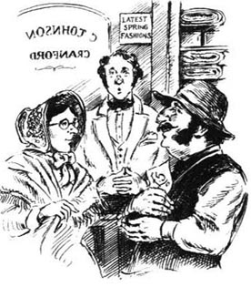
“约翰逊先生很抱歉，多布森先生，”伙计把钞票拿回来的时候说，“可是这家银行的钞票一钱不值。”
“我不明白，”马蒂小姐低声对我说，“县镇银行是我的那家银行，对吧？”
“是的……这块黄丝绸和你新帽子上的丝带很配。”我马上继续说道，并把丝绸举起来，希望那个人能走开。
“暂时别管丝绸了，亲爱的，”她说道，把手轻轻地放在我的手上，看着那个农夫，“我给你五英磅硬币换你的纸币，多布森先生。”她说，“不过这一定是搞错了。我是那家银行的股东，我还没得到任何通知说出了问题。”
店伙计隔着桌子小声地跟马蒂小姐说了几句话。她看着他，有些不敢肯定。“我不懂生意，”她说，“可是如果诚实的人要是因为他们拿的是我们的纸币就要损失钱财，那么……哦，我自己也解释不清。请把你的钞票给我吧，多布森先生，那样你就可以把这条披肩带给你妻子了。”
农夫感激地看着她，但迟疑了一会儿。“我不想别人为我而损失钱财。”他说，“可是，您看，夫人，五英镑对于一个拖家带口的人来说可是一大笔钱。”
“我敢肯定一定是弄错了，”马蒂小姐平静地说，“要不了几天，一切都会正常的。”她把自己的五镑金币推给那个农夫，那人慢慢地放下纸币。“谢谢你。”马蒂小姐说，“我要等一两天再买这些丝绸。”她对伙计说。“亲爱的，你要不要上楼来看看时装？”
马蒂小姐怀着极大的兴趣看着所有的新服装、新帽子和新披肩。她似乎一点儿也没有为刚才楼下发生的事情担心。可是我们下楼穿过店里的时候，约翰逊先生正在等着我们。是真的，他说，那家银行陷入了大麻烦。马蒂小姐没有表现出惊讶或恐慌的样子。克兰福德的女士们认为在店铺里表露感情很俗气。
不过，我们默默地走回家中，两个人都没怎么吃饭。后来，在休息室，马蒂小姐打开桌子上的锁，开始检查她的账单和文件。过了一会儿，她来到壁炉旁，坐到我身边。我把手放在她的手里。她握住我的手，却没有说话。
最后她说：“如果那家银行出了问题，我每年就要损失149英镑，那样一年我就只剩下13英镑了。”屋里太黑，看不清她的脸，但我知道她在哭。“哦，我真高兴可怜的德博拉不在这里！”对于姐姐把她们的钱投入这家倒霉的银行，她就只说了这么一句。
后来我们点燃了蜡烛，但时间比平常晚。不过，用过茶点之后，我们谈起了格兰米尔夫人。马蒂小姐开始认为她嫁给霍金斯先生是对的。“出了问题男人知道该怎么办。”她说，“霍金斯先生虽然有些粗俗，却是个很好的人。我认识一些不属于‘上流社会’的善良聪明的人，他们又真诚又有爱心……”
她开始想霍尔布鲁克先生了，我没有阻止她。我已经决定了该怎么办。那天晚上她上床睡觉之后，我又点燃了蜡烛，然后坐在休息室里给阿加·詹金斯先生写信。教堂的钟敲两点的时候我还没写完。
第二天一早就传来了县镇银行破产的消息。马蒂小姐损失了所有的钱，现在她每月只有大约一英镑的收入，她只能靠这点儿钱生活。“不过很多穷人钱更少。”她说，“可怜的马莎！我想她离开我会难过的。”她含着泪朝我微笑。我觉得她只想让我看见微笑，而不是眼泪。
8．True friends
8
True friends
While Miss Matty went downstairs to tell Martha, I quietly picked up my letter and went to Signor Brunoni's lodgings. The signor was now well enough to leave Cranford and, before he disappeared, I needed an exact address for the Aga Jenkyns in Chunderabaddad.
I then posted my letter to India, and hurried back home. Martha, in tears now herself, pulled me into the kitchen.
'I'll never leave her! I won't. "You may not know when you've got a good servant," I told her, "but I know when I've got a good mistress!" I've money in the Savings Bank, and I'm not going to leave Miss Matty.'
What should I say? Miss Matty needed this kind woman. 'But, Martha, I don't think Miss Matty will even have enough money to buy your food.'
'Not enough for food?!' Martha sat down on the nearest chair and cried aloud.
Upstairs, Miss Matty was very quiet and sad. We decided to ask my father to come and advise her. So I wrote another letter, and then we tried to make plans.
Miss Matty just wanted to sell most of her things, rent a single room somewhere and live quietly on the money that remained.
I wanted something better for her. She needed money and I wondered how she, a lady, could earn some. By teaching? She loved children, but she could not sing or draw or sew. Perhaps she could teach reading? No. When she read aloud, she had to cough before each long word. Writing? Her spelling was terrible! No. There was nothing she could teach the children of Cranford, I decided, except quiet goodness.
Dinner was announced by Martha, still crying. Dear, rough Martha! She now spoke to 58-year-old Miss Matty as kindly as to a child, and she had gone out and bought eggs and butter with her own money to cook her something special.
We did not talk much that afternoon, but when Martha brought our tea, I had an idea. Miss Matty could sell tea! Tea was not dirty, or heavy. And no shop-window would be necessary, only a small sign. The one thing against my plan was the buying and selling involved. Miss Matty would be in trade. Would she ever agree to that?
Suddenly, we heard a noise on the stairs and some whispering. Then Martha came in, pulling a great tall young man who was red with shyness.
'Please, madam, he's only Jem Hearn,' said Martha, breathing hard. 'And please, madam, he wants to marry me immediately. And we want to rent a house and have just one quiet lodger, to help us with the money. And, dear Miss Matty, will you be that lodger and stay with us? Jem wants it as much as I do.' She turned to him. 'You stupid great thing! Why don't you speak?... He wants the same as I do, but he's shy in front of ladies,' she explained.
'It's not that,' said Jem. 'It's just that, well, I didn't expect to marry so soon. Martha moves so fast when she has an idea in her head...'
Martha pushed him with her elbow. 'Please, madam, don't listen to him. He asked me only last night to marry him, but I said I couldn't yet, so now he's just surprised at the suddenness of it. But you know, Jem, you want a lodger as much as I do.' Another great push.
'Yes!' he said. 'And I don't mind marrying Martha, madam.'
'You've never stopped asking me,' cried Martha, 'and now you're making me look silly in front of my mistress!'
'Now, now, Martha,' said Jem, trying to hold her hand. 'It's just that a man needs time!' He turned to Miss Matty. 'I always expected Martha to be my wife—one day,' he said. 'I've great respect for everyone who's been kind to her, madam, and she's often said you're the kindest lady in the world. If you'd lodge with us, we'd try to make you comfortable...'
Miss Matty had been very busy with taking off her glasses, wiping them, and putting them on again. All she could say was, 'You mustn't hurry into marriage just because of me. Marriage is a very serious thing...'
'But Miss Matty will think about your plan,' I said quickly, 'and she can never forget your kindness.'
'I'm very willing, madam, though I don't explain myself well,' Jem replied. 'So, Martha, my girl,' he whispered, 'why do you go on crying and pushing me?'
Martha, annoyed, ran out of the room and was followed by her lover. Miss Matty then sat down and cried. The idea of Martha marrying so soon was such a surprise, she said. She would never forgive herself if the poor girl hurried into marriage because of her. I think I was more sorry for Jem of the two...
The next morning, very early, I received a mysterious note from Miss Pole, commanding me to come secretly to her house at eleven o'clock.
I went. The door was opened by Miss Pole's little maid in her Sunday clothes. Upstairs in the drawing-room, the table was covered with the best green card-cloth, and there were writing materials on it. Miss Pole was dressed for visitors. Mrs Forrester was already there, and then Mrs Fitz-Adam appeared, red with walking and excitement.
Miss Pole coughed. She arranged all of us at the table, with me opposite her. Then she asked me if it was true that Miss Matty had lost all her money.
'Yes, it's true,' I said, and I never saw sadder faces than the three around me.
'I wish Mrs Jamieson was here!' said Mrs Forrester.
Mrs Fitz-Adam clearly did not agree, and Miss Pole was not pleased. 'Even without Mrs Jamieson,' she said, 'we, the ladies of Cranford, can do something.'
She turned to me. 'Miss Smith,' she continued (I was usually known as Mary), 'I talked privately yesterday afternoon to these ladies about what has happened to our friend. None of us is vulgarly rich, but we shall all be pleased—truly pleased, Mary!—to give what we can to help Miss Matilda Jenkyns.' Here Miss Pole had to wipe her glasses.
'We wish, however, to give our little bits of money secretly, in order not to hurt any feelings. This is why we asked you to meet us. Your father, we believe, is Miss Jenkyns's adviser. We would like him to arrange for her to receive the money without knowing that it comes from us.' Miss Pole looked round at the little assembly. 'And now, ladies, while Miss Smith considers how to reply, allow me to offer you some bread-and-butter.'
I did not reply very grandly. I just said that I would tell my father, and began to cry. The ladies cried too. Even Miss Pole.
Mrs Forrester was the first to speak again. 'I'11 write down what money I can give. I wish it was more, my dear Mary. Indeed I do!'
Now I saw why paper and pens had been put on the table. Every lady privately wrote down what she could give each year, signed her paper and passed it to me. If the plan was accepted, my father would open the papers. If not, he would return them to their writers.
I got up to leave, but each lady wanted to speak to me by herself. Miss Pole kept me in the drawing-room, to say she had heard that Mrs Jamieson was coming home—very displeased with her sister-in-law, who was returning to Edinburgh that same afternoon. Of course, she could not say this in front of Mrs Fitz-Adam, who, as Mr Hoggins's sister, would not like to hear of anybody being angry about her brother's marriage.
Downstairs, Mrs Forrester was waiting. The poor old lady was trembling. She herself had less than ￡100 a year, she whispered, so she had only been able to promise Miss Matty ￡5 on her paper. She wished she was rich. She wished she could help dear Miss Matty more...
And then Mrs Fitz-Adam stopped me outside the house—to say almost the opposite. She had not liked to write down all she could afford and was ready to give.
'Miss Matty was such a fine young lady,' she explained, 'when I was just a country girl coming to Cranford market. One day, I remember, I met her just outside the town. She was walking, and a gentleman rode beside her and was talking to her. She was looking down at some flowers she had picked, and I think she was crying. But she turned and ran after me to ask—oh, so kindly—about my poor mother, who was dying. Miss Matty was the rector's daughter, and it was such an honour that she spoke to me in that pretty way.
'So do please think how I can give her a little more without anyone knowing, my dear. And my brother will be her doctor for nothing. He and her ladyship are ready to do anything for her. We all are.'
I was so anxious to get home to Miss Matty that I made all kinds of promises. But Miss Matty had not missed me. She was busy preparing to leave her house, and I think she was pleased to be doing something. Whenever she thought about Mr Dobson with his five-pound note, she said, she felt so dishonest! She was sure the bankers themselves must feel terrible...
My father arrived next morning, and when we were alone, I told him about Martha's plan and my meeting with the Cranford ladies.
My father brushed his hand across his eyes. 'See, Mary,' he said, 'how a good life makes friends all round. I could write a sermon about it if I was the rector!'
He and I decided that, if everyone agreed, Martha and Jem would marry as soon as possible and rent Miss Matty's house with the money given by the Cranford ladies. Then Martha could use whatever Miss Matty paid for her lodgings to make her comfortable.
I told my father my idea that Miss Matty could sell tea, and he liked it. One of the rooms downstairs could become a shop, he said enthusiastically. It could have a glass door and Miss Matty could sit behind a table...
Miss Matty patiently accepted all we arranged. She even agreed to sell tea. 'Though I doubt that I'll do it very well,' she said. 'I'd so much rather sell sweets to children!'
exact adj. correct in every detail; precise. 正确的；准确的；精确的。
advise v. give advice to sb.; recommend. 劝告；忠告；建议。
remain v. be left or still present after other parts have been revoked or used or dealt with. 剩下；剩余；遗留。
involve v. cause (sb./sth.) to become connected or concerned. 使卷入。
mind doing sth. (esp. in questions, negative and conditional sentences) feel annoyance or discomfort at (doing sth.); object to (doing sth.). （用于疑问句、否定句、条件句）对（做某事物）介意；反对（做某事物）。
willing adj. ready or eager to help. 愿意或乐于相助的。
opposite prep. on the other side of a specific area from (sb./sth.). 在（某人或某事物）另侧；面对（某人或某事物）。
consider v. think about sb./sth., esp. in order to make a decision; contemplate sb./sth. 考虑某人或某事物（尤指以作决定为目的者）。
not like to hear of sth. (usu. with will or would) refuse to allow sth. （通常与will或would连用）不允许某事。
afford v. (no passive) (usu. with can, could or be able to) have enough money, time, space, etc. for (a specified purpose). （不用于被动语态）（通常与can，could或be able to连用）为（某目的）有足够的钱、时间、地方等。
dishonest adj. (attrib.) intended to deceive or cheat. （作定语）骗人的；欺骗性的。
banker n. owner, director or manager of a bank. 银行的老板、董事长或经理。
doubt v. feel uncertain about; question the truth of (sth.). （对某事物）无把握，有怀疑。
真正的朋友
8．真正的朋友
马蒂小姐下楼去跟马莎讲话的时候，我静静地拿起我的信，去布鲁诺尼先生住的地方。这位先生现在已经康复，可以离开克兰福德了，在他消失之前，我需要知道昌德拉巴达那位阿加·詹金斯的确切地址。
然后我就把这封信寄往印度，并匆匆忙忙地回到家中。眼泪汪汪的马莎把我拽进了厨房。
“我永远也不离开她！我不。‘你雇了一个好仆人，可你也许并没有意识到，’我告诉她，‘但我知道我有个好主人！’我在储蓄银行里有钱，我不会离开马蒂小姐的。”
我能说什么？马蒂小姐需要这个善良的女人。“可是，马莎，我想马蒂小姐甚至连给你买食物的钱都不够。”
“买食物的钱都不够？！”马莎坐在最近的椅子上放声大哭。
楼上，马蒂小姐很安静，也很难过。我们决定让我父亲来给她出出主意。所以我又写了一封信，接下来我们试着制订些计划。
马蒂小姐只想把她大部分的东西变卖，在什么地方租一个单间的房屋，然后靠剩下的那点儿钱安静地生活。
我想给她出点儿更好的主意。她需要钱，我想知道她这样一位女士怎么样才能挣钱。教书吗？她爱孩子，可是她不会唱歌，不会画画，也不会缝纫。也许她可以教孩子们读书？不。她大声朗读的时候，读到每个长词之前都要咳嗽。教写作？她的拼写糟糕极了！不。除了安静善良的品行，她什么也教不了克兰福德的孩子，我想。
马莎宣布午餐开饭的时候仍然在哭。可爱而粗鲁的马莎！她现在跟58岁的马蒂小姐说话时的口气和善得就像是跟小孩子讲话一样，而且她还出去用自己的钱买了鸡蛋和黄油，想为她做一些特别的东西吃。
那天下午我们没怎么说话，不过马莎把茶点端进来的时候，我有了个主意。马蒂小姐可以卖茶叶！茶叶既不脏，也不重，也不需要橱窗，一块小招牌就够了。有一件事情会成为我这个计划的障碍，那就是买卖活动。马蒂小姐要做生意了，她会同意吗？
突然，我们听到楼梯上传来一阵嘈杂声和低声说话的声音。接着马莎进来了，拽着一个羞得满脸通红的高个子年轻人。
“对不起，小姐，他就是杰姆·赫恩。”马莎气喘吁吁地说，“求求您，小姐，他想立刻和我结婚。我们想租个房子，而且只想找一个安静的房客，来帮衬点儿钱。嗯，亲爱的马蒂小姐，您愿意做那个房客和我们生活在一起吗？杰姆和我一样希望您能同意。”她转向他，“你这个大傻瓜！为什么不说话？……他跟我的想法一样，不过他在女士面前会害羞。”她解释道。
“不是这样的，”杰姆说，“只不过，哦，我还不想这么快就结婚。马莎一有什么想法就会立刻行动……”
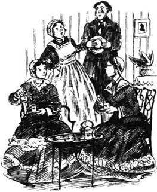
马莎用胳膊肘捅了他一下。“对不起，小姐，别听他的。他昨晚才向我求过婚，不过我说我还不能结婚，所以他现在对于这个突然的决定有些吃惊。不过你知道，杰姆，你像我一样想有一个房客。”她又使劲捅了杰姆一下。
“是啊！”他说，“而且我也不介意和马莎结婚，小姐。”
“你一直不停地求我，”马莎哭道，“现在你却让我在女主人面前出丑！”
“得了，得了，马莎，”杰姆说道，想要握住她的手，“只不过男人需要时间！”他转向马蒂小姐，“我一直盼望有一天马莎能做我的妻子，”他说，“谁对她好，我就特别尊敬谁，小姐，她经常说您是世上最好的女士。如果您能和我们一起住，我们会尽量让您住得舒适的……”
马蒂小姐一直忙着把眼镜摘下来，擦镜片，又戴上去。她所能说的就是：“你们不要因为我而草草结婚。婚姻是很严肃的事情……”
“不过马蒂小姐会考虑你们的计划的，”我立刻说，“她永远也不会忘记你们的好意。”
“我很愿意，小姐，虽然我自己说不清楚。”杰姆回答道，“那么，马莎，我的姑娘，”他低声说道，“你为什么还在哭还要捅我呢？”
马莎生气了，跑出了房间，她的恋人也跟着她跑了出去。马蒂小姐坐下来哭了。马莎这么快就结婚真是出人意料，她说。如果这个可怜的女孩儿因为她而草草结婚，她永远也不会原谅自己。我想在这两个人中，我更替杰姆感到难过……
第二天一大早，我就收到了波尔小姐写来的神秘纸条，要我在11点钟的时候秘密地到她家去。
我去了。波尔小姐的小女仆穿着最好的衣服前来开门。在楼上的休息室里，桌上铺着最好的绿色牌布，上面还放着一些纸笔。波尔小姐穿着会客的服装。福里斯特夫人已经到了，后来菲茨-亚当夫人也来了，她的脸色由于走路和激动而有些发红。
波尔小姐咳嗽了几声。她安排我们大家坐在桌边，我正对着她。然后她问我马蒂小姐损失了所有钱财的事是否属实。
“是的，是真的。”我说，我再也没见过谁的脸色比坐在我身边的这三位更忧愁的了。
“我希望贾米森夫人在这里！”福里斯特夫人说。
菲茨-亚当夫人显然不同意，波尔小姐也不高兴。“就算没有贾米森夫人，”她说，“我们这些克兰福德的女士也能做些事情。”
她转向我。“史密斯小姐，”她继续说道（大家一般都叫我玛丽），“昨天下午我和这些女士私下谈了谈发生在我们朋友身上的事。我们都不是土财主，不过我们大家都会高兴地——真的是高兴地，玛丽！——尽力帮助马蒂尔达·詹金斯小姐。”说到这儿，波尔小姐不得不擦了擦眼镜。
“不过，我们希望能秘密地把我们这些为数不多的钱给她，以免伤害她的感情。所以我们才让你来和我们见面。我们相信你父亲是詹金斯小姐的顾问。我们想让他为她安排接收这笔钱，但又不让她知道这钱是我们给的。”波尔小姐环顾了一下参加聚会的这几个人，“现在，女士们，趁史密斯小姐考虑如何回答的时候，请允许我给大家上一些抹了黄油的面包。”
我并没有说什么豪言壮语。我只是说我会告诉父亲，然后就哭了。女士们也哭了，连波尔小姐都掉下了眼泪。
福里斯特夫人是接下来第一个说话的人。“我会把我能给的钱数写下来。我希望我能给得更多些，亲爱的玛丽。真的！”
现在我明白为什么桌上摆好了纸和笔。每一位女士都秘密地写下了自己每年能给的钱数，签上名，然后交给我。如果这个计划被采纳，我父亲就会打开这些纸。如果不能，他会把它们还给书写者本人。
我起身要走，但每一位女士都想亲自和我说话。波尔小姐让我留在休息室，告诉我她听说贾米森夫人就要回家了——她对她嫂子很不满，而她嫂子也要在当天下午回爱丁堡去。当然，她不能当着菲茨-亚当夫人的面说这些，她是霍金斯先生的妹妹，不会允许任何人对她哥哥的婚姻说三道四。
楼下，福里斯特夫人正在等待着。这位可怜的老夫人浑身发抖。她本人一年只有不到100英镑，她低声说，她只能在纸上写下答应给马蒂小姐五英镑。她希望自己有钱，她希望自己能给亲爱的马蒂更多的帮助……
后来，菲茨-亚当夫人在房子外面拦住了我——她说的话几乎正好相反。她不想把自己能给的钱数都写下来，而且她现在就准备给一些钱。
“马蒂小姐是一位多好的年轻女士啊，”她解释道，“那时我还是个初到克兰福德集市的乡下女孩儿。有一天，我记得，我就是在镇子外面遇到她的。她当时正在散步，身边有位先生骑着马正在跟她说话。她低着头看自己摘的花朵，我觉得她是在哭。可是她转过身，跑着追上我问——哦，好亲切啊——问起我那可怜的将死的母亲。马蒂小姐是教区长的女儿，我很荣幸她能用这么温柔的方式和我说话。
“所以一定请你想想我怎么样才能多帮她一点儿，又不让别人知道，亲爱的。而且我哥哥会无偿地为她看病。他和尊敬的夫人乐于为她做任何事情，我们大家都是这样。”
我很着急回马蒂小姐那里去，所以满口应承下来。不过马蒂小姐并不想念我。她正忙着准备离开她的房子，我想，做些事情会让她感到高兴的。她一想到多布森先生和他的五英镑纸币，她说，她就觉得好像撒了大谎似的！她确信银行家们一定感觉非常糟糕……
我父亲第二天早晨就到了，我们单独在一起的时候，我告诉他马莎的计划以及我和克兰福德的女士们会面的事情。
我父亲用手揉揉眼睛。“看，玛丽，”他说，“为人多积善，朋友遍天下。如果我是教区长，我都可以写一篇布道文了！”
他和我决定，如果大家都同意，马莎和杰姆可以尽快结婚，用克兰福德的女士们给的钱租下马蒂小姐的房子。然后马莎可以用马蒂小姐付给她的住宿费让她生活得舒舒服服。
我告诉父亲我认为马蒂小姐可以卖茶叶，他觉得这主意不错。楼下的一个房间可以开一间店面，他热心地说。店门可以是玻璃的，马蒂小姐可以坐在桌子后面……
马蒂小姐耐心地接受了我们的一切安排，她甚至同意卖茶叶。“虽然我怀疑我能不能做得好，”她说，“我倒更愿意卖糖果给孩子们！”
9．A happy return
9
A happy return
Mrs Jamieson, when she returned, considered Miss Matty's situation for two or three days. Then she kindly gave her approval and allowed Miss Matty to sell tea and still remain in Cranford society, although she would be in trade. I think she was trying to annoy Lady Glenmire, by showing that a married woman comes down to her husband's level in society. An unmarried woman like Miss Matty, however, could keep the level that her father had. So Cranford was allowed to visit Miss Matty; and, whether allowed or not, it was going to visit Lady Glenmire.
But then we learnt that 'Mr and Mrs Hoggins' were going to return the following week. 'Mrs Hoggins', not 'Lady Glenmire'! Mrs Jamieson was pleased. 'That woman' never had any taste, she said. But 'that woman' and her new husband looked very happy on Sunday at church—and we did not turn our faces away from them as Mrs Jamieson did.
Miss Matty sold a lot of her furniture, though 'an unknown friend' (Mrs Fitz-Adam, I suspected) bought some favourite pieces back for her. The rector, too, bought the late Mr Jenkyns's library and then offered some of the books back to Miss Matty, saying he had not enough shelves for them all.
The downstairs room was changed into a shop, as agreed, and we put a very small notice above the new door: 'Matilda Jenkyns, seller of tea'. Inside, the walls were white, and two great boxes of tea stood on the bare wooden floor. I spent my small savings on sweets for the children Miss Matty loved so much, and now her shop was ready to open.
Well, not quite. Miss Matty was worried because Mr Johnson also sold tea and she did not want to take business away from him. So she went down the street to talk to him about it. He was very kind to her, and I know that he sent her some of his own customers, by telling them that Miss Jenkyns's teas were better than the ones he sold. My businessman father shook his head. 'All very well in Cranford perhaps. You could not do business like that in Drumble!'
But I was delighted. Everyone suddenly seemed to need tea. Indeed, Miss Matty sold so much of it on the first two days that I felt able to leave her and go home to Drumble.
I returned every three months to check the shop and help Miss Matty with her business letters. This reminded me, of course, that no reply had ever come from India. I began to be ashamed of my letter to the Aga Jenkyns, and was glad I had told nobody about it.
About a year after Miss Matty opened her shop, Martha begged me to come back to Cranford. I went immediately in case Miss Matty was ill. She was not. When I looked quietly into the shop, there she was behind the table, happily knitting. The only problem was that Martha was expecting her first baby very soon, and Miss Matty did not realize it.
'I'm so afraid she won't approve!' cried Martha to me in the kitchen. 'Will you tell her?'
I decided I would not. But a week later, I went in to see Miss Matty with a baby in my arms. She asked for her glasses, looked at it in surprise and was very silent all day. Then she went up to see Martha and they both cried with happiness. Shy, proud Jem shook my hand so hard that I still remember the pain,
While Martha was in bed, I was busy in the house. But sometimes I helped Miss Matty in the shop and was amused to watch her. She would never make a success of selling sweets! She gave away too many to every child who came in. But she had made more than ￡20 from selling tea in her first year, I discovered. She liked her new life, too, now that she was used to it. She met the country people, and they brought so many little presents of fruit and eggs for 'the old rector's daughter' that her table was sometimes quite full.
Cranford itself went on as usual. Mr and Mrs Hoggins were very happy together, though Mrs Jamieson still did not speak to them and even her man Mulliner avoided them in the street. It was now June. Martha was up again, and I was sitting in the shop one afternoon with Miss Matty when I saw a gentleman walk slowly past the window. He stood at the door, searching for a name. Then he came in. His hair was white, but his face was deep brown from the sun. It was the Aga Jenkyns, I knew it!
He stood opposite Miss Matty, just looking at her. Then he turned sharply to me. 'Is your name Mary Smith?'
'Yes!' I said.
He clearly did not know how to announce himself to Miss Matty, who was always shy when a man entered the shop. 'Give me a pound of those things,' he said, waving at some sweets.
'A pound!' Now Miss Matty looked up at him. 'Oh, sir! Can you be Peter?' she said, and trembled from head to foot.
In a moment, he was round the table and holding her in his arms. She was so white that I told Mr Peter to take her up to the drawing-room and put her on the sofa. 'I've been too sudden for you, my little Matty,' he said. She held her brother's hand tightly and allowed him to carry her up. I left them to talk alone while I went down to tell a delighted Martha, and then back to the shop.
We had tea early that day. Miss Matty sat in the armchair opposite her brother, eating nothing, just looking at him. 'You were a boy when you left Cranford,' she said fondly, 'and now you have white hair!'
'And I forgot how time passes, Matty! I've brought you a pretty little dress from India! I remembered your taste. It was so like my dear mother's.'
At that time, the brother and sister held each other's hand even more tightly, and I got up to leave them together again. But Peter rose too. 'I must arrange for a room at the "George",' he said. 'My bag is there too.'
'No!' cried Miss Matty. 'Please, dear Peter, don't go! Mary, don't allow it!'
So I gave Mr Peter my room and moved in with Miss Matty. Poor Peter, she told me that night, had fought at Rangoon and been taken prisoner by the Burmese. Afterwards, his letters to England were returned with the word 'Dead' across them. So he had decided to stay out in the East as a planter. Then my letter arrived...
I do not think Peter came home from India a rich man, but a day or two later the shop was closed. The sweets were given to children, the tea was given to old people. The pretty dress was kept for Flora Gordon and, at about this time, many nice presents arrived for Miss Pole and Mrs Forrester, Mrs Fitz-Adam and Mrs Jamieson. I myself received handsome copies of Dr Johnson's books. Miss Matty begged me, with tears in her eyes, to consider them a present from her sister as well as herself.
Peter became a great favourite with the ladies of Cranford. He told 'wonderful stories' (though these stories were less wonderful, I noticed, when the rector was present). He had 'wonderful foreign ways'—he even sat on the floor at one of Miss Pole's parties. When Mrs Jamieson smiled her approval, I remembered she had once called Mr Hoggins 'vulgar' just because he crossed his legs as he sat on his chair.
So I returned to Drumble, leaving Miss Matty and Mr Peter very happy together. Martha and Jem remained willingly in the house, with baby Matilda. The only sadness was that Mrs Jamieson and the Hogginses were still not friends.
But then, one October morning, I received letters from Miss Pole and Miss Matty, asking me to come to Cranford. The dear Gordons were arriving on the fourteenth, they wrote, and had invited everyone to a lunch at the George Inn—even Miss Betty Barker, even Mr Hoggins and his wife, whom Major Gordon had met in Scotland.
Would Mrs Jamieson go to the lunch? When I arrived in Cranford, no one yet knew. Mr Peter, however, said she should and would go. 'Leave Mrs Jamieson to me,' he announced. The next thing we heard, from Miss Pole, was that Mrs Jamieson was indeed going.
Clever Mr Peter had arranged for 'Signor Brunoni, Conjurer to the King of Delhi' to return to Cranford Assembly Room 'in honour of the Honourable Mrs Jamieson'. Mrs Jamieson's name was written large on the notice. Mr Peter was sending everyone free tickets. And when was Signor Brunoni going to show his magic? On the evening of the Gordons' lunch...
So Mrs Jamieson came to the lunch, all smiles at Mr Peter's fantastic stories of his travels—and he entered the Assembly Room that evening with the Honourable Mrs Jamieson on one side and my lady, Mrs Hoggins, on the other.
Since that day, the old friendliness has returned to Cranford. I am pleased about this. My dear Miss Matty loves peace and kindness, and I think we are all better people when she is near.
come down to sth./doing sth. (infml.) be forced by poverty, etc. to do sth. that one would never do normally; be reduced to sth. （口）沦落为……；因贫穷等被迫去做正常情况下决不做的事。
notice n. (sheet of paper, etc. giving) written or printed news or information, usu. displayed publicly. 布告；公告。
bare adj. without the usual covering or protection. 缺少遮盖的；没有保护的。
be expecting (a baby/child) (infml. euph.) be pregnant. （口，婉）怀孕。
give sth. away give sth. free of charge. 免费送出某物；赠送。
search for sb./sth. look at, examine or go over (a thing or a place) carefully in order to find sb./sth. 细查（某物或某处）以搜寻某人或某物；搜索。
sharply adv. quickly. 迅速地。
in a moment very soon. 立刻；马上。
arrange for sth. make sth. happen; ensure that sth. happens. 准备；设法。
cross one's legs place one leg over the other, esp. at the thighs. 两腿交叉；盘腿。
in honour of sb./sth. out of respect for sb./sth. 出于对某人或某事物的敬意。
all smiles looking very happy. 显得非常愉快。
幸福归来
9．幸福归来
贾米森夫人回来后，为马蒂小姐的处境考虑了两三天，然后她好心地同意马蒂小姐卖茶叶，而且还可以继续留在克兰福德的上流社会，虽然她要做生意了。我想她是想惹恼格兰米尔夫人，向她表明一位已婚妇女自甘堕落，把社会地位降到了她丈夫的水平。然而，一位像马蒂小姐这样的未婚女子却可以保持她父亲曾有过的社会地位。所以，克兰福德的上流社会被允许造访马蒂小姐；而不管是否允许，她们都要去拜访格兰米尔夫人。
不过，接着，我们就得知“霍金斯先生和夫人”将在下周回来。是“霍金斯夫人”而不是“格兰米尔夫人”！贾米森夫人很高兴。“那个女人”毫无品味，她说。不过“那个女人”和她的新丈夫在周日做礼拜时显得很幸福——而且我们也没有像贾米森夫人那样把脸转过去。
马蒂小姐把很多家具都卖掉了，然而“一位不知名的朋友”（我怀疑是菲茨-亚当夫人）又把她最喜欢的几件家具给她买了回来。教区长也把已故的詹金斯先生的图书室买了下来，并把其中的一些书还给了马蒂小姐，说他没有足够的书架来放这些书。
按照事先说好的那样，楼下的房间被改成了一间商店，我们在那扇新的门上方贴了一张很小的告示：“马蒂尔达·詹金斯，出售茶叶”。屋里的墙壁都是白色的，两个巨大的茶叶箱子立在光溜溜的木地板上。我用不多的一点儿积蓄买了糖果，给马蒂很喜欢的孩子们，现在，她的店铺可以开张了。
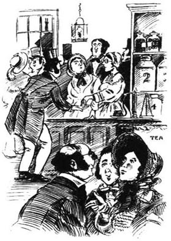
啊，还没有完全准备好。马蒂小姐很担心，因为约翰逊先生也卖茶叶，而她不想抢他的生意。所以她沿着街走到他那里跟他说这件事。他对她很好，我知道他还把自己的一些主顾让给了她，告诉他们詹金斯小姐的茶叶比他卖的要好。我做生意的父亲直摇头：“也许在克兰福德行得通，在德莱姆伯尔却不能这么做生意！”
不过我很高兴。好像突然间大家都需要茶叶了。真的，马蒂小姐头两天卖了那么多茶叶，让我觉得可以放心地离开她回德莱姆伯尔的家了。
我每三个月回来一次看看商店，帮马蒂小姐处理一下商业信函。当然，这倒提醒了我，还没有从印度得到任何回音。我开始为自己给阿加·詹金斯先生写信感到羞愧，并庆幸自己没有把这件事告诉任何人。
马蒂小姐的商店开张大约一年后，马莎求我回到克兰福德。我立刻赶了回去，生怕马蒂小姐生病了。她好好的。我静静地望着店里，她正坐在桌子后面，愉快地织着毛线。唯一的问题是马莎马上就要生第一个孩子了，马蒂小姐还没意识到这一点。
“我真担心她不会同意！”马莎在厨房里大声对我说，“你能告诉她吗？”
我决定不告诉她。不过一周后，我抱着一个婴儿进到店里去见马蒂小姐。她要来她的眼镜，惊奇地看着孩子，然后一整天都很沉默。后来，她上楼去看马莎，她们俩都高兴地哭了。腼腆而自豪的杰姆使劲握我的手，我到现在还都记得那疼痛。
马莎卧床期间，我在房子里忙进忙出。但有时我也帮助马蒂小姐打理店里的生意，而且喜欢看着她。她卖糖果绝对不会挣钱！她给每个进来的孩子发糖吃，给得实在太多了。不过我发现她头一年卖茶叶还是挣了20多英镑。现在她习惯了她的新生活，也喜欢上了它。她碰到的乡下人带了那么多水果鸡蛋之类的小礼物给“老教区长的女儿”，以至于她的桌子上有时候堆得满满的。
克兰福德还是一如既往。霍金斯先生和夫人在一起生活得很幸福，虽然贾米森夫人仍然不和他们说话，甚至连她的男仆马利纳在街上碰到他们都绕道而行。现在已经是六月了。马莎又能下床了。一天下午我正和马蒂小姐在店里坐着，看到一位先生慢慢地走过窗前。他站在门口，寻找着一个名字。然后他就进来了。他满头白发，脸却被太阳晒成了棕色。是阿加·詹金斯，我就知道！
他站在马蒂小姐对面，就那么望着她。然后他突然转向我：“你叫玛丽·史密斯吗？”
“是的！”我说。
他显然不知道该如何向马蒂小姐宣布自己的身份，因为男人进店的时候她总是很害羞。“给我称一磅那些东西。”他说，朝一些糖果指了指。
“一磅！”现在马蒂小姐抬起头看着他，“哦，先生！难道你是彼得吗？”她说道，从头到脚都在颤抖。
不一会儿，他就绕过桌子把她搂在了怀里。她面色白得吓人，于是我告诉彼得先生带她到楼上的休息室去，让她躺在沙发上。“我来得太突然了，我的小马蒂。”他说。她紧紧地抓着弟弟的手，任由他抱着自己上楼去了。我让他们单独在一起说话，我则下楼把这消息告诉了马莎，她开心极了，接着我又回到了店里。
那天我们喝茶喝得很早。马蒂小姐坐在一把扶手椅里，正对着她弟弟，她什么也没吃，就望着他。“你离开克兰福德的时候还是个孩子，”她怜爱地说，“现在你都有白头发了！”
“我都忘了时间是怎么过去的，马蒂！我从印度给你带来了一条很好看的小裙子！我记得你的喜好，跟我亲爱的母亲那么像。”
说到这里，姐弟俩把彼此的手握得更紧了。我站起身准备再次把他们单独留在一起，但是彼得也站了起来，“我必须在乔治旅馆安排一个房间，”他说，“我的包也在那里。”
“不！”马蒂小姐大声说道，“求你了，亲爱的彼得，不要走！玛丽，别让他走！”
所以我把我的房间让给了彼得先生，搬去和马蒂小姐同住一屋。那天晚上她告诉我，可怜的彼得曾在仰光作战，并被缅甸人俘虏。后来，他写到英国的信被退了回来，信上写着“死亡”。所以他决定待在东方做一个种植园主。后来我的信寄到了那里……
我觉得彼得并没有在印度发了财回来，不过一两天后商店就关门了。糖果都给了孩子们，茶叶给了老人，那条漂亮的裙子为弗洛拉·戈登留着。大约就在这个时候，波尔小姐、福里斯特夫人、菲茨-亚当夫人和贾米森夫人都收到了很多很好的礼物，我本人则收到了很多精美的约翰逊博士的书籍。马蒂小姐含着眼泪求我，把它们看作是她姐姐和她的礼物。
彼得深受克兰福德的女士们的青睐。他讲述“精彩的故事”（不过我注意到，教区长在场的时候，这些故事的精彩程度就大打折扣了）。他有一种“令人羡慕的异国情调”——在波尔小姐的一次晚会上他甚至坐在了地板上。贾米森夫人笑着表示赞许的时候，我想起有一次她把霍金斯先生称为“俗人”，就因为他跷着二郎腿坐在椅子上。
于是我回到了德莱姆伯尔，留下马蒂小姐和彼得先生非常幸福地生活在一起。马莎和杰姆仍然愿意留在那幢房子里，带着小马蒂尔达。唯一美中不足的是，贾米森夫人和霍金斯夫妇仍然不和。
不过就在那时，十月的一个早上，我收到了波尔小姐和马蒂小姐的两封信，请我来克兰福德。亲爱的戈登一家要在14号来，她们写道，已经邀请了所有的人在乔治旅馆共进午餐——甚至还请了贝蒂·巴克小姐，还有霍金斯夫妇，戈登少校在苏格兰见过他们。
贾米森夫人会去赴午宴吗？我到克兰福德的时候，大家还都不知道。然而，彼得先生说她应该去，也会去。“把贾米森夫人交给我。”他宣布。后来我们从波尔小姐那里听说，贾米森夫人的确要去。
聪明的彼得先生安排“德里郡主的魔术师布鲁诺尼先生”回到克兰福德的大会厅“以示对尊敬的贾米森夫人的敬意”。告示上用很大的字写着贾米森夫人的名字。彼得先生给大家免费赠票。布鲁诺尼先生什么时候开始表演魔术呢？就在戈登家的午餐会当晚……
所以贾米森夫人来到了午餐会，满面笑容地听着彼得先生讲他旅行中遇到的稀奇古怪的事情——那天晚上他进到大会厅的时候，一边是尊敬的贾米森夫人，另一边是我尊敬的夫人，霍金斯夫人。
从那天起，克兰福德从前的友好气氛又恢复了。对此我感到很高兴。我亲爱的马蒂小姐热爱和平和友好，我想她在我们身边的时候，我们都变得更好了。
ACTIVITIES：Before Reading
ACTIVITIES
Before Reading
1．Read the story introduction of the book. How much do you know now about life in Cranford? Are these sentences ture (T) or false (F)?
1) Life in Cranford does not change very fast.
2) It is necessary to have a lot of food at parties.
3) Business people are an important part of Cranford society.
4) Talking about money is not considered polite.
5) The ladies of Cranford go to visit each other whenever they feel like it.
6) Although there are occasional arguments, the ladies of Cranford are usually good friends.
2．Can you guess what is going to happen in this story? Choose one answer for each question.
1) What will Miss Matty's happy surprise be?
(a) She is given a lot of money.
(b) A kind, handsome gentleman asks her to marry him.
(c) Someone she believed was dead comes home again.
(d) She opens a little shop, which is very successful.
2) Which of these sad things does not happen to Miss Matty?
(a) She loses nearly all her money.
(b) The ladies of Cranford stop visiting her.
(c) A man she loves dies.
(d) Her elder sister dies.
ACTIVITIES：While Reading
ACTIVITIES
While Reading
1．Read Chapters 1 to 3, then answer these questions.
1) How and why did the ladies' opinion of Captain Brown change?
2) What two things did Miss Jenkyns dislike about Miss Jessie?
3) What did Captain Brown and Miss Jenkyns disagree about?
4) How did Miss Jessie's life change after her father's death?
5) Why didn't Miss Matty marry Thomas Holbrook?
6) How did Miss Matty feel about Mr Holbrook during and after the visit, and how did Mary Smith know this?
7) Why do you think Miss Matty changed her mind about a follower for Martha after Mr Holbrook died?
2．Before you read Chapter 4 (Poor Peter), can you guess the answers to these questions?
1) Who was Peter?
(a) Miss Matty's brother.
(b) Miss Matty's cousin.
(c) Miss Matty's uncle.
(d)A man Miss Matty loved.
2) Why was he called 'poor Peter'?
(a) He was always ill.
(b) He had no money.
(c) He was always in trouble.
(d) He was always unhappy.
3) Where was Peter now?
(a) In London.
(b) In Scotland.
(c) In Australia.
(d) In India.
3．Read Chapters 4 and 5. Are these sentences true (T) or false (F)? Rewrite the false ones with the correct information.
1) Peter was a kind boy, but he was always playing jokes.
2) Peter locked himself in his room because his father had laughed at him in front of a crowd of people.
3) Peter wrote to his sister, begging her to send him money.
4) Deborah told Miss Matty that she had refused a hundred offers of marriage.
5) Miss Barker invited the ladies in order of their importance in Cranford society—which was Miss Pole, Miss Matty, Mrs Fitz-Adam, Mrs Jamieson, and finally, Mrs Forrester.
6) At Miss Barker's party the ladies ate a lot more than usual.
7) The ladies met Lady Glenmire as soon as she arrived.
8) Lady Glenmire was a nicer person than her sister-in-law.
4．Read Chapters 6 and 7. Choose the best question-word for these questions, and then answer them.
How / What / Who / Why
1)... did the ladies have a lot of questions for Miss Pole?
2)... was Miss Matty worried about watching magic tricks?
3)... helped Signor Brunoni and his family, and how?
4)... had helped the conjurer's wife when Phoebe was ill?
5)... news about Lady Glenmire surprised everybody?
6)... did Miss Matty give Mr Dobson five pound coins and take his note?
7)... happened to Miss Matty when her bank failed?
8)... did Mary Smith decide to do?
5. Before you read Chapters 8 and 9, can you guess who Miss Matty's 'true friends' were, and what they did? Choose some names and match them with the actions below.
Mary Smith and her father
Mr Hoggins
Mrs Jamieson
Martha and Jem Hearn
Mrs Fitz-Adam
Mrs Forrester
Signor Brunoni's wife
Mr Johnson
Miss Pole
1)... helped her to open a shop.
2)... sent customers to her shop.
3)... took her into their house as their lodger.
4)... offered to be her doctor for nothing.
5)... secretly gave her money.
6)... helped her to manage her business.
6. Read Chapters 8 and 9. Who said this, and to whom? Who, or what, were they talking about?
1) 'I'll never leave her! I won't!'
2) 'You stupid great thing! Why don't you speak?'
3) 'It's just that a man needs time!'
4) 'Miss Matty will think about your plan.'
5) 'I wish it was more, my dear Mary. Indeed, I do!'
6) '... a gentleman rode beside her and was talking to her.'
7) 'I could write a sermon about it if I was the rector!'
8) 'You could not do business like that in Drumble!'
9) 'I'm so afraid she won't approve!'
10) 'I've been too sudden for you,...'
11) '... and now you have white hair!'
12) 'Leave Mrs Jamieson to me.'
ACTIVITIES：After Reading
ACTIVITIES
After Reading
1．Here are eight pieces of important Cranford news. Look at the replies, decide what the news is, and complete what the speaker is saying. (Use as many words as you like.) Then put the pieces of news in the right order for the story.
1) 'My dear, have you heard the news? ______'
'How exciting! I wonder what he'll do. Perhaps he'll make things disappear—I've always wanted to see that.'
2) 'I have some very sad news. Last night ______'
'Yes, we shall miss her very much. She always knew exactly what to do, and what the rules were.'
3) 'My dear, you'll never believe this! ______'
'But that's extraordinary! Can it really be true? First a lord, and then—a doctor! Whatever will Mrs Jamieson say?'
4) 'Something so exciting has happened! ______'
'That's wonderful! She must be so pleased. And all this time everybody thought that he was dead...'
5) 'I've just seen a man in the street. He says ______'
'Oh, how terrible! Such a kind man—always thinking of other people first. And those two poor girls of his...'
6) 'Have you heard? ______'
'No! Surely it's just a bit of fun. Have they looked everywhere? He'll be back soon, I'm sure.'
7) 'Have you heard the news? ______'
'The poor dear thing! To lose everything like that... Well, we must all think what we can do to help her. '
8) 'I heard this from Miss Jenkyns herself. ______'
'Going to be married? Oh, that's lovely news! I always said she had very pretty dimples.'
2．What did Mary Smith say in her letter to the Aga Jenkyns (end of Chapter 7)? Put the parts of sentences in the right order, and join them with these linking words to make four sentences.
and / because / but / but when / if / which / who / who
Dear Mr Jenkyns,
1) ______ is a very dear friend of mine.
2) I felt sure you must be Miss Matty's missing brother.
3) ______ has suddenly failed,
4) ______ her brother would be able to do so much more.
5) I am writing to you about Miss Matilda Jenkyns,
6) ______ you are, your sister Miss Matty needs your help,
7) ______ Mrs Samuel Brown told me about the Aga Jenkyns,
8) We are doing what we can to help her,
9) ______ all her money was held in shares in a bank.
10) Miss Matty believes that her brother Peter died in India,
11) ______ had helped to save her baby in Chunderabaddad,
12) ______ Miss Matty has lost almost everything.
Yours sincerely,
Mary Smith
3．Here are parts of letters written by characters in the story. Choose the best words (one for each gap) to complete them. Then say who wrote each letter, who received it, and what was happening at that point in the story.
1) I have some news ______ you, my dear, which ______ surprise you. I am ______ to be married to ______ Hoggins. He is such ______ kind and generous man! ______ is a very good ______ too, which I discovered ______ we were both helping ______ poor conjurer and his ______.
I hope you are ______ your stay in Cheltenham...
2) I have some important ______ to discuss with you ______ our other friends. Please ______ sure to come to ______ house at eleven o'clock, ______ we cannot do anything ______ your help. Do not ______ the meeting or this ______ to anyone—this is ______ important.
3) I am ______ to invite you and ______ Smith to visit me ______ my little house here ______ Woodley next Tuesday. It ______ give me great pleasure ______ you would come to ______ and spend the day ______. I have asked my ______ Miss Pole too, so ______ three of you can ______ in the same carriage...
4) Your son Peter Jenkyns, ______ has just joined my ______, is a fine boy ______ I am sure he ______ make a good sailor. ______ the moment the ship ______ in the River Mersey, ______ we will sail south ______ the next few days. ______ you wish to see ______ son, you must come ______ once to Liverpool...
5) I am writing to ______ you to come back ______ Cranford. We have a ______, and I don't know ______ to do. You are ______ only person who can ______ Jem and me, and ______ must do something soon, ______ it will be too ______...
6) There are worrying reports ______ the Town and County ______. I warned Miss Jenkyns ______ ago not to buy ______ in this bank, but ______ did not take my ______. I hope Miss Matty ______ not still have these ______, because they'll be worth ______ if the bank fails...
4．Imagine that you are a reporter for the local newspaper in Cranford. Write a report of the death of Captain Brown, using these notes to help you.
● terrible accident / railway station
● captain reading / girl on line / train coming
● saved child / fell / under train
● Cranford two years / working for railway / two daughters
● popular and respected / greatly missed
5．What did you think about this story and its characters? Complete some of these sentences.
1) I liked ______ best / least because ______.
2) The part of the story I enjoyed most / least was ______.
3) I would / wouldn't like ______ as a neighbour because ______.
4) I would / wouldn't like to live in a small town like Cranford because ______.
封底
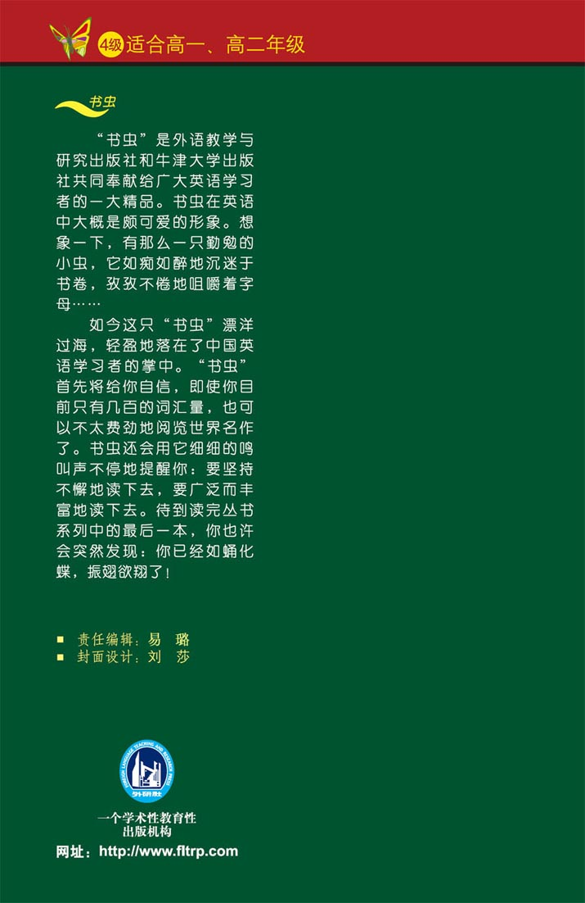